제1장 서론
1.1 연구 배경 및 필요성
1.1.1 대한민국 창업생태계 현황
① 인터넷 등장으로 촉발된 IT 산업의 부흥
1989년 영국의 과학자 Tim Berners-Lee는 월드 와이드 웹(WWW)을 고안하고 개발하여 인터넷의 대중화를 이끌었다. 당시 인터넷이 가져온 파급력은 굉장히 놀라운 수준이었고 자연스럽게 정보기술(IT, Information Technology) 산업이 급성장하면서 전 세계적으로 수많은 벤처기업이 생겨나기 시작했다. 대표적으로 아마존(1994년 설립)과 구글(1998년 설립) 이 해당 시기에 설립되었다.
② 대한민국 벤처기업 역사의 시작
국내에서는 대한민국 최초 벤처기업 ‘메디슨’을 창업한 이민화 대표를 중심으로 1995년 12월 벤처기업협회가 창립되면서 창업생태계의 토대와 기반을 닦을 수 있었다. 한국 정부도 이에 발맞춰 1997년 「벤처기업육성에 관한 특별조치법」을 제정하여 벤처기업 인정 요건에 대한 정의, 연기금의 벤처 투자 허용, 엔젤투자자 세금 감면 등 다양한 지원 방안이 마련되었다. 또한 코스닥 시장을 제2거래소 수준으로 육성하고 활성화하겠다는 방안도 발표되었다.
③ 제2벤처붐 이후 찾아온 겨울
2000년 초반 제1벤처붐이 찾아온 이후 약 20년에 걸쳐 창업 생태계의 외형적 규모가 대폭 성장하여 2020년 전후로 제2벤처붐이 도래하였다.
< 그림 1. 1998~2023 창업기업 및 투자금액 현황 (e-나라지표) (본인 재가공) >
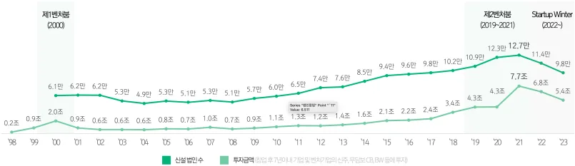
기록하였고 동시에 투자금액도 역대 최대 규모인 7조 6,802억원을 달성하였다. 하지만 2022년부터 세계 경제가 급격히 침체되며 금융 시장이 불안정해졌고 투자 혹한기가 시작되어 2021년 대비 2023년 투자금액은 29.7% 감소하였고 신설 법인 수도 22.5% 감소하였다. [그림 1]
1.1.2 새로운 성공 사례의 필요성
스타트업 대부분은 초기 단계에서 실패를 겪으며 창업 5년 이내 무려절반 정도가 실패로 끝난다. 심지어 IT 스타트업은 창업이 활발한 분야이지만 창업 후 3년 이내 생존율이 3분의 1 수준으로 실패율 또한 높다. 결국 전체 생애주기 관점에서 스타트업의 실패율은 90%에 육박할 정도로실패가 당연하게 여겨지는 생태계라고 할 수 있다.
< 그림 2. 2020년 OECD-한국 창업기업 생존율 (중소벤처기업부) (본인 재가공) >
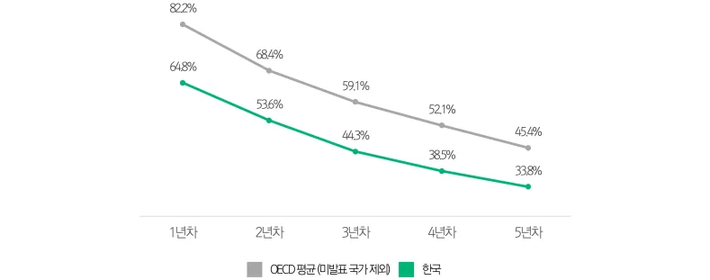
2020년 기준으로 OECD 회원국 중 28개 국가의 창업기업 생존율과 한국 창업기업 생존율을 비교하였다. [그림 2] 창업기업 5년 후 생존율은 스웨덴이 63.3%로 가장 높았고 이어 벨기에(62.5%), 네덜란드(61.9%) 순으로나타났다. 한국은 33.8%로 28개 국가 중에 26번째로 꼴찌 수준으로 포르투갈(33.4%), 리투아니아(27.2%) 등 두 곳만 한국보다 낮았다. 그나마 국내에서 스타트업이 주로 포진되어 있는 전문/과학/기술서비스업의 경우 5년차 생존율이 39.2% 정도로 나타났다. 이제는 과거 성공사례가 가진 전략만으로 스타트업의 생존율을 높이기에는 한계가 있다. 기존 방식을 탈피한 성공 사례를 발굴하여 대한민국 창업생태계에 공유하고자 한다.
1.2 연구 주제, 질문 및 목표
< 그림 3. 연구 주제, 질문 및 목표 (본인 작성) >
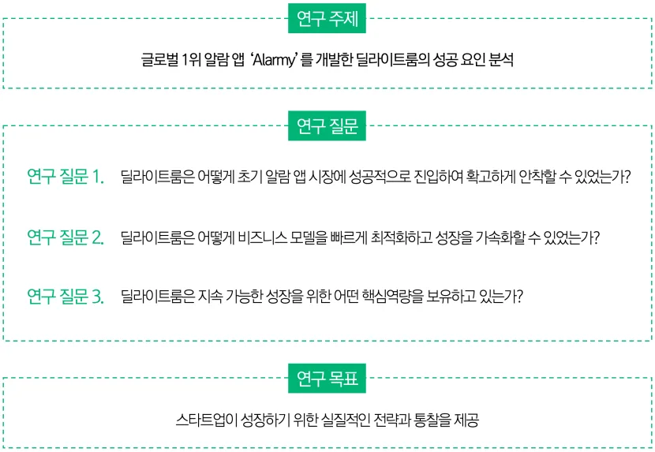
1.3 딜라이트룸 소개
① 기업 개요
< 그림 4. 딜라이트룸 기업 개요 (본인 작성) >
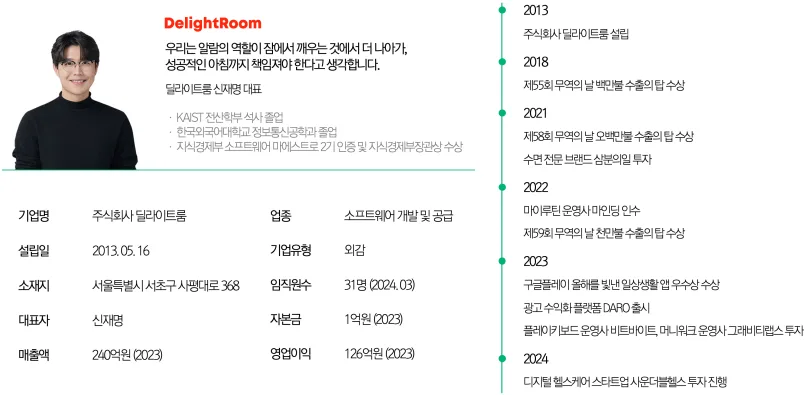
② 서비스 소개
딜라이트룸은 글로벌 1위 알람 앱 ‘Alarmy'를 개발하고 있다. Alarmy는 2012년 8월에 ’Sleep If U Can‘이라는 앱으로 구글 플레이 처음 출시되어현재까지 누적 다운로드 8,200만을 기록하며 97개국 구글 플레이 및 애플앱스토어에서 카테고리 1위를 차지하고 있다.
< 그림 5. Alarmy 앱 주요 화면 (본인 작성) >
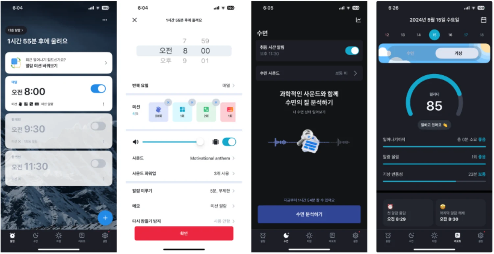
Alarmy의 핵심기능은 알람 해제를 위해 주어지는 수학문제, 따라쓰기, 흔들기, 사진찍기 등의 미션 알람이다. [그림 5] 그리고 수면 분석과 리포트, 다시 잠들기 방지, 취침 리마인더 등의 기능도 제공하고 있다. [표 1]
< 표 1. Alarmy 주요 기능 및 설명 (본인 작성) >
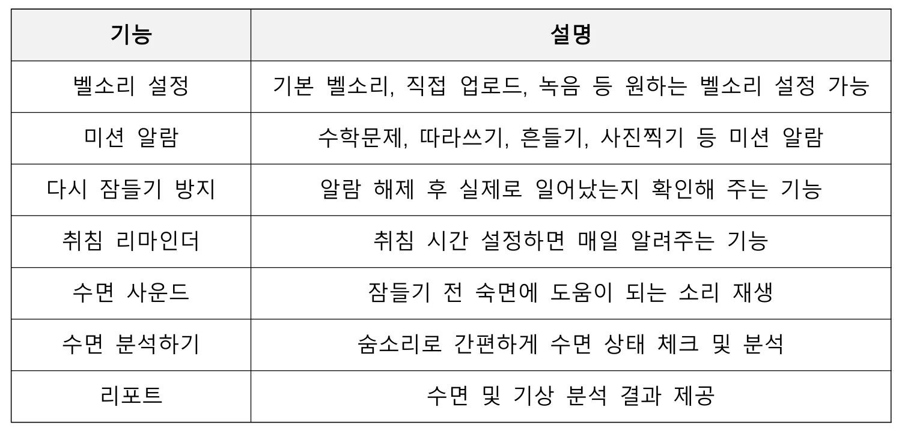
③ 딜라이트룸 타임라인
본 사례 연구는 딜라이트룸이 성장해 온 궤적을 따라 순차적으로 분석을 시도하고자 한다. 2012년부터 2023년에 이르기까지 발생한 주요한 사건들을 중심으로 창업기(2012), 개척기(2013-2015), 성장기(2016-2019), 도약기(2020-2022), 확장기(2023)로 분류하였다. [그림 6]
< 그림 6. 딜라이트룸 타임라인 (본인 작성) >
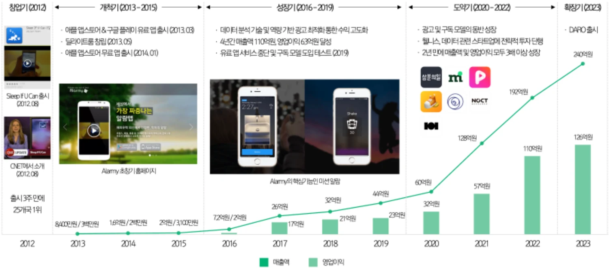
제2장 이론적 배경
2.1 린 스타트업 (Lean Startup)
린 스타트업은 2008년 Eric Ries가 제조업의 린 생산 방식과 본인의 경험을 바탕으로 창업과 제품 개발에 적용한 개념으로부터 시작되었다.
① MVP (Minimum Viable Product) & Build-Measure-Learn Cycle 최소 요건 제품을 의미하는 MVP를 빠르게 개발하고 출시하여 시장 반
응을 확인하고 고객 피드백을 적극적으로 수용하여 제품/서비스를 지속적으로 개선하며 최적화를 달성하는 것이 중요하다. 이는 만들고(Build), 측정하고(Measure), 학습하는(Learn) 과정을 통해 진행된다. [그림 7]
< 그림 7. Build-Measure-Learn Cycle (린 스타트업, 2012) (본인 재가공) >
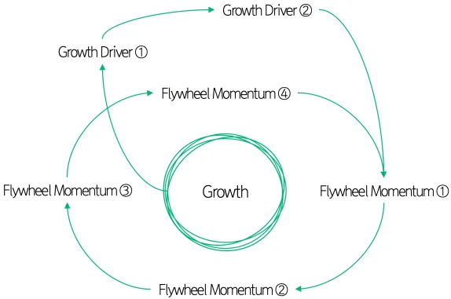
수집한 초기 사용자 반응을 바탕으로 MVP 성과를 분석하여 제품 가설을 검증해야 하며 짧은 시간 안에 적은 비용으로 해당 사이클을 반복하는 게 핵심이다. 이를 통해 자원의 낭비를 최소화하며 가장 효율적인 방법으로 제품/서비스를 개발하여 사업의 빠른 성장을 도모하며 반복적인 실험과 검증 통해 리스크를 줄일 수 있다.
② 유효한 학습 (Validated Learning)
실제 데이터를 기반으로 제품 개발을 조정하며 사업 가설을 검증해야한다. 기업 내부 수요가 아니라 고객의 실제 요구를 제품/서비스 개발에 반영하는 것이 중요하다. FGI, A/B 테스트 등이 유효한 학습의 예시이다.
2.2 선점우위 효과 (First Mover Advantage)
선점우위 효과는 특정 시장이나 산업에서 가장 먼저 진입한 기업이 얻게되는 전략적 이점과 혜택을 의미한다. 이러한 이점은 시장 진입 초기의 독점적 지위를 활용해 강력한 브랜드 인지도를 구축하고 소비자 충성도를 확보하며 후발주자가 모방하기 어려운 진입 장벽을 형성하는 데 있다. 선점우위 효과는 다음과 같은 3가지 주요 요소로 설명된다. [표 2]
< 표 2. 선점우위 효과의 3가지 주요 요소 (본인 작성) >
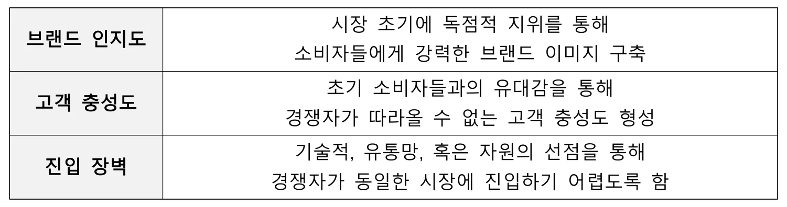
2.3 락인 효과 (Lock-in Effect)
락인 효과는 소비자가 특정 제품이나 서비스에 익숙해지거나 이를 사용할 때 발생하는 전환 비용으로 인해 경쟁사로의 이동이 어려워지는 현상을의미한다. 이는 기업이 기존 고객을 유지하고 반복적인 매출을 확보하는것에 중요한 전략적 요소로 작용한다. 락인 효과의 주요 메커니즘은 다음과 같은 요인들로 인해 발생한다. [표 3]
< 표 3. 락인 효과의 메커니즘의 3가지 주요 요인 (본인 작성) >
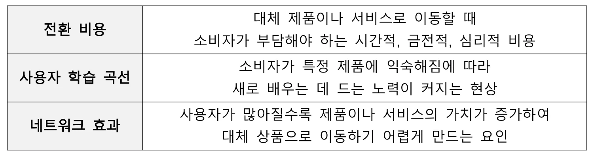
락인 효과는 고객 충성도를 확보할 수 있는 강력한 전략이지만 소비자의선택권을 제한한다는 점에서 부정적 인식을 받을 수 있다. 이를 극복하기위해선 기업은 단순히 전환 비용을 높이는 것이 아니라 지속적으로 제품과서비스를 개선하며 고객 가치를 증대시켜야 한다.
2.4 플라이휠 효과 (Flywheel Effect)
① 플라이휠 효과의 정의
플라이휠 효과는 Jim Collins가 그의 저서 <Good to Great>에서 소개한개념으로 초기에는 천천히 움직이던 조직이나 기업의 성장이 꾸준한 노력을 통해 점진적으로 가속화되며 큰 성공을 이루는 과정을 비유적으로 설명한 것이다. 이는 조직이나 기업의 각 활동과 전략이 유기적으로 연결되어 자발적으로 움직이는 성장 메커니즘을 형성할 때 나타난다. 플라이휠은 외부적인 큰 추진력이 아니라 내부의 작은 힘들이 지속적으로 축적되며 가속화하는 특징이 있다.
② 플라이휠의 주요 구성 요소
플라이휠 효과를 구현하기 위해서는 성장 동력(Growth Driver)과 플라이휠 모멘텀(Flywheel Momentum)이라는 요소가 필수적이다. 성장 동력은 플라이휠을 처음 움직이기 위해 필요한 초기 추진력으로 기업의 성장을 이끄는 핵심 활동이나 전략을 의미한다. 그리고 플라이휠 모멘텀은 플라이휠이가속화되면서 자연스럽게 형성되는 순환적 성장의 흐름으로 각 단계가 서로 강화하며 더 큰 성과를 이끌어내는 구조를 형성하며 기업의 지속 가능성과 경쟁우위를 뒷받침한다. [그림 8]
< 그림 8. 플라이휠 효과의 시각적 표현 (본인 작성) >
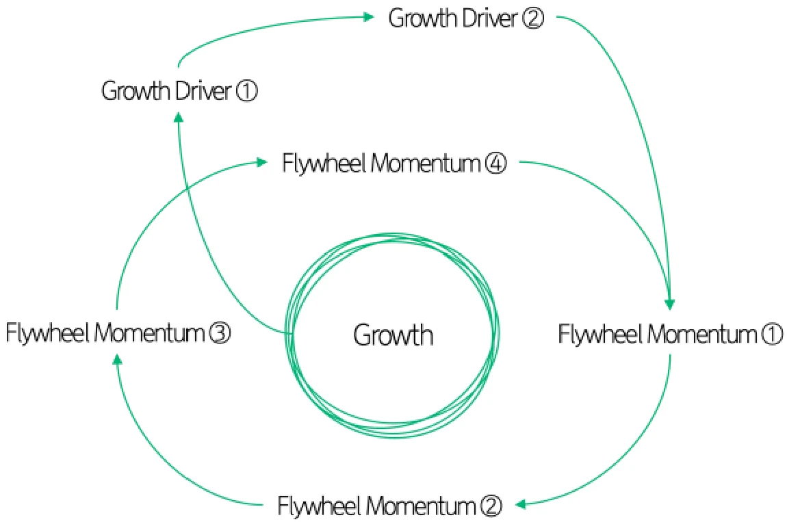
플라이휠 효과는 기업이 내부의 활동과 전략을 잘 연계하여 성장을 가속화하는 것에 초점을 맞춘다. 대표적인 사례로 아마존(Amazon)이 있다.
2.5 핵심역량 (Core Competence)
1990년 Gary Hamel과 C. K. Prahalad가 하버드 비즈니스 리뷰에 발표한 <The Core Competence of the Corporation>에서 기업이 경쟁우위를 유지하고 혁신을 촉진하기 위해 핵심역량에 집중해야 한다고 강조하였다.
① 핵심역량의 3가지 조건
고객 가치, 경쟁우위, 확장력이 핵심역량의 3가지 조건이다. [그림 9] 고객의 문제를 해결하거나 요구를 충족시키는 방식으로 가치를 창출해야 하며, 경쟁사들이 쉽게 따라 할 수 없어야 하며 지속적인 경쟁우위를 제공해야 한다. 또한 다양한 시장과 제품 라인에 걸쳐 활용될 수 있어야 하며 기업이 새로운 기회를 탐색하고 확장될 수 있도록 해야 한다.
< 그림 9. 핵심역량의 3가지 조건 (본인 작성) >
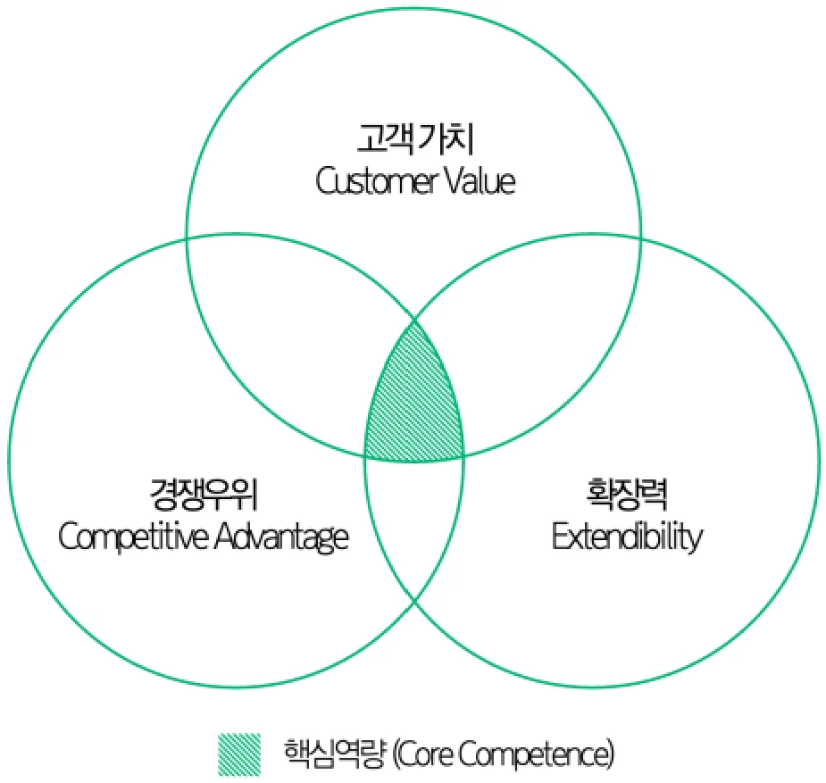
② 경쟁의 본질
기업은 보유하고 있는 역량을 바탕으로 핵심 제품을 개발하고 이를 기반으로 사업을 확장하여 최종 제품을 출시한다. 시장에서 기업의 경쟁은 본질적으로 역량의 대결이므로 핵심역량을 빠르게 인지하고 집중적으로 성장시킨 기업이 경쟁우위를 차지하고 생존에도 유리하다. 또한 기업이 경쟁에서 살아남기 위해서는 지속적인 혁신과 개선을 통해 경쟁력을 유지하고 강화하여 시장에서의 위치를 공고히 해야 한다.
제3장 성공 요인 분석
3.1 초기 시장 진입 이후 확고한 안착
3.1.1 알람 앱의 기능적 정의 및 분석
① 기본 앱 (Default apps)
2007년 아이폰(iPhone)이 처음 출시되었을 때는 전화, 메시지, 날씨, 카메라, 사진, 사파리(Safari) 등의 앱들이 기본적으로 제공되었다. 그중 시계 (Clock) 앱 내에는 세계 시계를 포함하여 알람, 타이머, 스톱워치 등 4가지 기능으로 구성되어 있었다.
< 그림 10. 아이폰의 알람 기능 (ANANDTECH, 2007) >
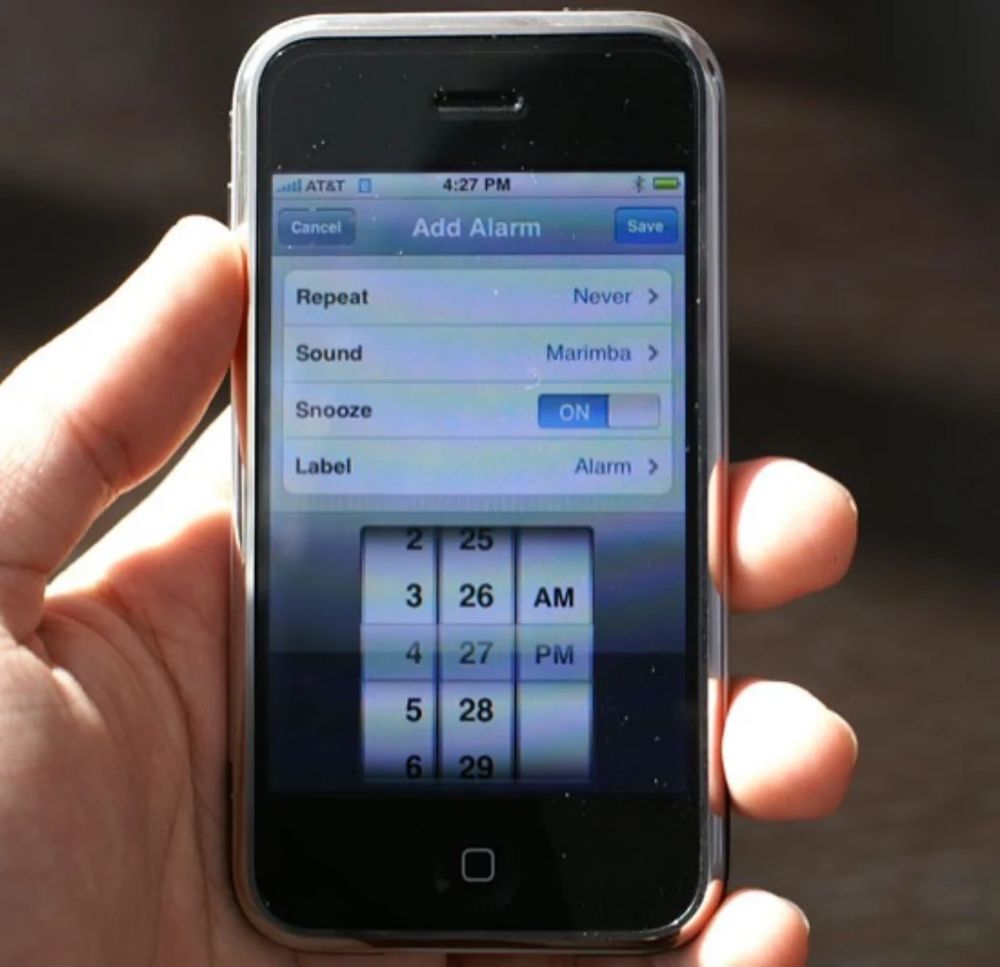
사용자가 시계 앱의 알람 기능을 열면 알람이 울릴 시간을 휠 피커(Wh eel Picker) 방식으로 설정한다. 그리고 반복(Repeat) 옵션을 통해 매주특정 요일에 알람이 울릴 수 있도록 할 수 있으며, 벨소리(Sound) 옵션에서는 다양한 알람음을 선택할 수 있다. 또한 스누즈(Snooze) 기능을 활성화하면 알람이 울린 후 일정 시간 후에 다시 울리도록 할 수 있다. 마지막으로 라벨(Label)을 통해 알람 목적을 사용자 정의할 수 있다. 결론적으로 기본 시계 앱의 알람 기능은 사용자가 설정한 시간에 소리를 출력하는 것을 핵심기능으로 제공하며, 반복 설정, 벨소리 선택, 스누즈, 라벨설정 등 사용자 맞춤 옵션을 지원한다. [그림 10]
② 서드파티 앱 (Third-party apps)
아이폰 1세대의 등장 이후 1년 뒤인 2008년에 애플 앱스토어가 출시되었다. 이는 스마트폰의 본격적인 대중화를 이끄는 역사적인 사건이었다.
‘앱 경제(App Economy)'라는 신조어가 생겨나며 스마트폰 애플리케이션의 개발, 배포, 판매를 중심으로 형성된 새로운 경제 생태계가 태동하였다. 당시 엄청나게 많은 앱들이 시장에 쏟아졌고, 애플 앱스토어는 출시후 불과 6개월 만에 5억 다운로드를 기록했다고 발표했다. [그림 11] 이러한 뜨거운 열기 속에서 기본 앱으로 제공되고 있었던 이메일, 날씨, 계산기 등이 지닌 불편함을 보완한 앱들도 활발히 출시되고 있었다.
< 그림 11. 2009년 애플 홈페이지 메인 배너 (ars Technica, 2009) >
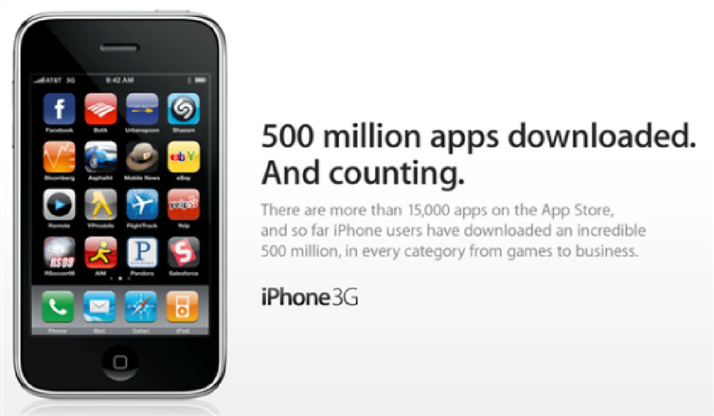
기본 앱으로 제공되던 시계 앱의 알람 기능도 예외는 아니었다. 일부사람들은 알 수 없는 이유로 설정된 시간에 알람이 울리지 않거나, 실수로 음량을 작게 설정한 상태로 잠을 자서 알람을 듣지 못하는 문제를 겪기도 했다. 심지어 2010년 10월에는 서머타임 종료에 따라 아이폰이 자동으로 시간을 조정했으나 알람 기능이 이를 반영하지 못하고 한 시간늦게 울리는 이슈가 발생하기도 했다. 아이폰 운영체제 iOS 4의 버그가원인으로 밝혀졌고 애플은 서둘러 업데이트를 통해 해결했지만, 이 사건을 계기로 서드파티 알람 앱을 설치하는 사용자들은 더욱 늘어났다.
2010년 기준으로 애플 앱스토어에는 알람 앱만 수백 개가 될 정도로우후죽순처럼 쏟아지고 있었다. 대부분 앱들은 기본적으로 아이폰의 기본앱인 시계 앱의 알람 기능을 포함하면서 부가적인 기능을 추가하는 식으로 사용자들의 시선을 사로잡았다. 사용자 또한 기본 앱보다 서드파티 앱으로 제공되는 알람 앱이 알람 본연의 기능 측면에서 상대적으로 안전하다고 신뢰하였기에 알람 앱의 수요는 지속적으로 증가하였다.
< 표 4. 2010년 애플 앱스토어의 주요 알람 앱 (softonic, 2010) (본인 재구성) >

당시 알람 앱의 주요 트렌드는 디자인과 커스터마이징이었다. 기본적으로 앱 자체의 디자인이 기본 앱보다 특색이 있고 심미적으로 뛰어났다.
그리고 알람 사운드나 배경화면을 사용자가 수정할 수 있는 기능을 제공하였다. 그중 일부 앱은 세부적인 기능에도 심혈을 기울였다. 스마트폰에설정된 음량과 무관하게 알람 사운드가 작게 시작하여 점점 커지는 기능도 있었고 슬립 타이머를 제공하며 자기 전까지 음악을 들을 수 있게 해주는 앱도 있었다. [표 4] 하지만 이러한 다양한 시도가 있었음에도 불구하고 알람 앱 시장의 절대적인 강자는 그때까지 나타나지 않았다. 수많은경쟁자가 있었지만, 알람 앱 시장에는 여전히 성공의 기회가 있었다.
3.1.2 초기 MVP 개발 및 출시 과정
① 문제 인식 및 정의
2012년 신재명은 평소 아침잠이 많아서 아침에 일어나는 것을 매우 힘들어했다. 스마트폰에 있는 기본 앱부터 서드파티 앱까지 다양한 알람 앱들을 사용해봤지만 아침에 일어나는 문제는 좀처럼 나아지지 않았다.
② 해결책 찾기
그는 인터넷을 살펴보다 크라우드 펀딩 플랫폼 Kickstarter에서 진행한 ‘Ramos Alarm Clock’이라는 프로젝트를 우연히 발견했다. 해당 프로젝트는 미국 Stevens Institute of Technology에 근무하는 25살 엔지니어인 Paul Sammut가 추진했다. 그가 개발한 제품은 알람 시계의 알람 해제기능을 물리적으로 분리하여 별도의 장소에 설치하는 방식으로 설계되었
다. 즉, 알람이 울리는 곳과 해제하는 곳이 다른 것이 그의 아이디어였던
것이다. 사용자는 아침에 알람이 울리면 디퓨즈 패널(Defuse Panel)이라고 불리는 장치가 설치된 장소로 직접 가서 사전에 설정한 디퓨즈 코드(Defuse Codes)를 입력해야 한다. 그래야만 알람이 해제된다. [그림 12]
< 그림 12. Ramos Alarm Clock (Kickstarter, 2012) >
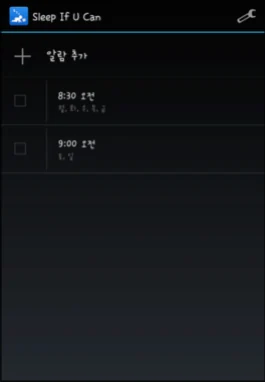
디퓨즈 코드는 날짜를 사용하거나 알람 시계에 깜빡이는 4자리 숫자를 사용할 수 있다. 또한 알람이 울리기 전에 미리 해제하고 잠드는 것을 방지하기 위한 잠금 모드, 다른 이들과 함께 사는 사람들을 위해 알람이 1 0초만 울리는 매너 모드(Courtesy Mode)도 있다. 창의적이고 기발한 컨셉 덕분에 이 프로젝트는 후원자들로부터 많은 관심을 받았고 2012년 2월 14일부터 46일 동안 총 153,585 달러의 펀딩을 이끌며 성공했다. 게다가 크라우드 펀딩이 종료되고 12년이 지난 지금도 여전히 제품을 잘쓰고 있으며 후원한 프로젝트 중 최고였다는 찬사도 발견할 수 있었다.
③ MVP 개발 및 출시
신재명은 Ramos Alarm Clock 프로젝트에서 깊은 영감을 받았다. 그는당시 현존하는 알람 앱은 사용자가 알람을 끄고 다시 잠드는 문제를 해결하지 못한다고 여겼다. 그는 무조건 잠을 깨운다는 일념으로 새로운 알람 앱을 기획하기 시작했다. 특히 Ramos Alarm Clock처럼 알람이 울리는 장소와 알람이 해제되는 장소를 분리시키면 이 문제를 효과적으로 해결할 수 있을 것이라고 판단했다. 그래서 사용자가 알람을 설정하기 전에미리 알람을 해제할 장소에 있는 물건을 촬영하여 저장하고, 알람이 울리면 그 장소에 있는 물건을 직접 카메라로 촬영해야만 알람을 끌 수 있게하는 것으로 설계했다.
당시 그는 한국외국어대학교 정보통신공학과를 졸업하고 KAIST 전산학부 석사과정에 입학한 후 지식경제부 SW 마에스트로 2기 연수생으로 활동하고 있었다. 소프트웨어와 관련된 전공을 했을 뿐만 아니라, 전국에서내로라하는 SW 인재들과 함께 역량을 쌓고 있었던 것이다. 덕분에 그의아이디어는 곧장 실행에 옮겨질 수 있었고 개발을 시작한 지 한 달이 조금 지난 2012년 8월 22일 Alarmy의 전신인 'Sleep If U Can'이라는 이름의 앱으로 구글 플레이에 출시되며 세상에 첫발을 내딛었다. [그림 13]
< 그림 13. 구글 플레이 Sleep If U Can (네이버 블로그, 2013) >

출시 직후 Sleep If U Can의 대부분 기능은 기본 앱의 알람 기능과 거의 유사했다. 앱을 켜서 알람 시간을 선택한 후 반복, 벨소리, 스누즈 등여러 가지 옵션을 설정할 수 있다. 그밖에 알람 시 진동을 울리게 하거나, 알람 사운드가 일정 시간이 지나면 무음으로 변경되는 자동 무음 모드 정도가 추가된 기능이라고 볼 수 있다. [그림 14]
< 그림 14. Sleep If U Can 앱 알람 설정 화면 (네이버 블로그, 2013) >
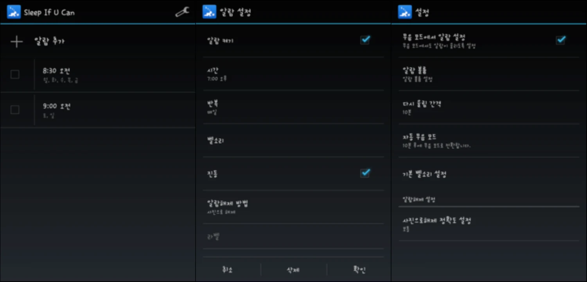
이 앱의 차별화된 핵심기능은 앞서 설명한 것처럼 알람 그 자체가 아니라 알람을 해제하는 방법에 있다. 이 기능을 ‘사진으로 해제’라고 정의했고 알람을 해제하기 위해 어떤 사진을 촬영해야 하는지 미리 설정하고, 알람이 울리면 해당 사진과 동일한 장면을 촬영해야 해제된다. 사용자가완벽하게 똑같은 사진을 촬영하기 어려울 수 있기 때문에 ‘사진으로 해제’에 대한 정확도를 ‘높음(힘들게 해제)’, ‘보통’, ‘낮음(쉽게 해제)’ 등 적절하게 설정할 수 있다. [그림 15]
< 그림 15. Sleep If U Can 앱 알람 해제 화면 (네이버 블로그, 2013) >
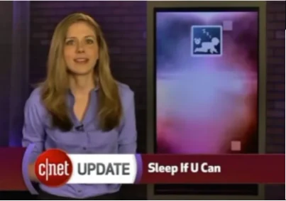
④ 린 스타트업의 MVP 개념
Sleep If U Can 앱이 개발한 지 약 한 달 만에 출시될 수 있었던 이유는 간단하게 설명될 수 있다. 신재명은 복잡한 기능 없이 ‘사진으로 해제’라는 단순한 핵심기능 하나만 명확하게 정의하고 빠르게 기획하여 개발에 집중했다. 당시 그는 회사를 설립하기도 전이었고 1인 개발자로서본인의 한정된 자원을 효율적으로 사용하는 것에 전념했다. 이렇게 출시된 앱의 첫 버전은 린 스타트업에서 강조하는 MVP(Minimum Viable Product, 최소 요건 제품) 개념과도 일치하며 모범적인 사례로 볼 수 있다. 군더더기 같은 기능은 모조리 제거하고 핵심가치를 지닌 기능만 남겨둔 덕분에 사용자는 앱을 보고 자신의 문제를 보다 쉽게 인식하고 곧바로 해결을 시도할 수 있게 되는 것이다. 이와 같이 MVP라는 개념은 단순히 초기 자원을 절약하여 얻는 경제적 효과에 그치는 것뿐만 아니라핵심가치를 효과적으로 전달하는 수단이자 방법인 전략이라 할 수 있다.
3.1.3 전략적 마케팅으로 이룬 성공적 데뷔
① 해외 매체에 집중한 언론보도 공략
Sleep If U Can을 출시하고 신재명은 앱을 홍보하는 방안에 대해 고민했다. 일단 앱을 소개하는 자료부터 만들었다. 그리고 이를 알릴 만한 매체를 적극적으로 찾기 시작했다. 특히 해외 소식을 다루는 외신 기자들을중심으로 조사하며 이메일 주소를 확보했다. 이 중에는 Ramos Alarm Clock에 대해 보도를 한 기자들도 포함되어 있었다. 이어서 확보된 리드 (Lead)를 활용하여 준비한 소개서를 배포하기 시작했다. 그러자 몇몇 기자들이 Sleep If U Can에 대해 관심을 가지고 기사를 내주기 시작했다. 2012년 8월 미국의 IT 전문 매체인 CNET에서는 CNET Update라는 뉴스 클립 콘텐츠를 통해 Sleep If U Can을 약 40초간 소개하며 사용자가알람을 끄기 위해 특정 장소의 사진을 찍어야 하는 방식을 설명해 주었다. 추가로 ‘Alarm app makes you get up, take photos, stay awake'라는 제목의 기사도 내주었다. [그림 16] 본문에서는 이 앱이 아침을 위한사악한 계획(evil plan)이라고 묘사했고, 덕분에 ’악마의 알람‘이라는 별명을 얻게 되며 해외 사람들에게 점차 알려지기 시작했다.
< 그림 16. CNET의 방송과 지면을 통해 소개된 Sleep If U Can (CNET, 2012) >
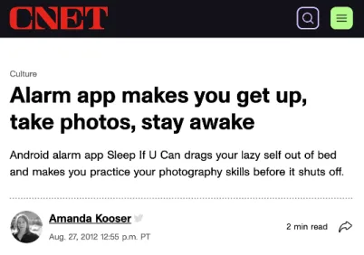
처음 앱을 소개해 준 미국 CNET과 HUFFPOST, LIFEHACKER 그리고 한국 ZDNET Korea, 전자신문, 머니투데이에서도 기사를 실어주었다. 그뿐만 아니라 일본, 러시아 등 국가의 매체에도 소개가 되었다. [표 5]
< 표 5. 출시 후 1년간 Sleep If U Can 미디어 노출 주요 성과 (본인 작성) >
미국, 중국, 일본, 러시아, 호주, 유럽 등 다양한 국가의 언론 매체를 통해 소개된 덕분에 Sleep If U Can이 전 세계적으로 알려지게 되었다. 처음부터 앱의 출시 소식을 해외로 공략하여 언론보도를 진행한 것이 성공적이었고 국내 매체에서도 Sleep If U Can에 대한 소식을 적극적으로 다뤄주는 긍정적인 효과가 있었다. 그중 지디넷코리아에서 2012년 9월 2일보도한 ‘무조건 깰 수밖에 없는 알람 앱 화제’라는 제목의 기사는 국내대표 포털 사이트 네이버 메인 화면에 게시되기도 했다. [그림 17] 2013 년 11월 30일 한국공개소프트웨어협회에서 주최한 <ANDROID SEMINAR For Start-up> 행사에 연사로 초청된 신재명은 네이버 메인 화면에 게시된 효과는 약 5만 뷰 수준이었다고 밝혔다.
< 그림 17. 네이버 메인 화면에 노출 (딜라이트룸, 2013) >
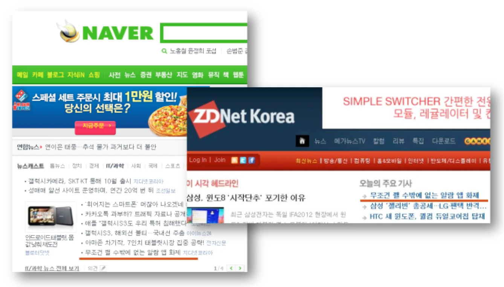
이렇게 앱 출시 초반에 공격적인 PR 활동을 전개한 덕분에 0에 가까웠던 다운로드는 어느새 조금씩 일어나기 시작했고, 이를 계기로 글로벌 알람 앱 서비스로서 성장할 수 있는 작은 발판을 마련할 수 있었다.
② 바이럴(Viral)을 위한 커뮤니티 공략
스타트업의 서비스 출시와 관련된 언론보도는 초기 사용자 유입을 만드는 것에는 유효한 영향을 끼치지만 투입하는 노력에 비해 결과가 나오는 방식이 일회성으로 인식된다는 점은 아쉬운 부분이라고 볼 수 있다.
매체를 활용한 홍보와 더불어 실질적인 사용자 확보 전선에 뛰어들기 위해 신재명은 다양한 커뮤니티 사이트를 공략하였다. 그중에서도 1999년에 개설된 ‘오늘의유머’는 Sleep If U Can에게는 아주 유용한 커뮤니티였던 것으로 보인다. 그는 2012년 9월 10일에 ‘알람류 甲’이라는 제목의 글을 올리며 Sleep If U Can에 대한 짧은 설명, 앱 스크린샷과 함께 지디넷코리아에 올라온 기사 URL을 공유했다. 100 자도 되지 않는 짧은 글은순식간에 약 9만 회의 조회수를 기록하며 많은 관심을 끌었다. [그림 18]
< 그림 18. Sleep If U Can 홍보 게시글 (오늘의유머, 2012) >
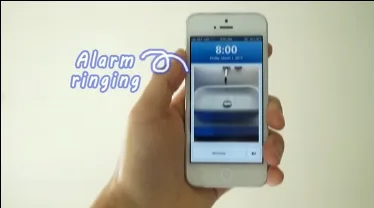
그로부터 몇 달이 지나 Sleep If U Can은 어느덧 아이폰 사용자를 위한 iOS 앱이 유료로 출시되었다. 신재명은 2013년 4월 4일 오늘의유머에또 다른 계정으로 유저들에게 감사의 인사와 함께 iOS 앱을 무료로 받을수 있는 리딤코드(Redeem Code)를 나눠주는 이벤트를 진행했다. 댓글에이메일 주소를 남기면 그가 직접 리딤코드를 보내주는 방식이었다. 이 글역시 바로 유저들의 반응을 일으키며 약 5만 회의 조회수를 기록함과 동시에 400명 이상이 댓글을 남기고 iOS 앱을 다운로드하였다.
③ 출시 3주 만에 구글 플레이 25개국 1위 등극
국내외 언론보도 및 각종 온라인 커뮤니티에서의 바이럴이 확산되면서 Sleep If U Can은 출시 3주 만인 2012년 9월에 구글 플레이 25개국 1위에 등극하는 기염을 토하며 알람 앱이라는 새로운 시장을 개척하였다.
④ 바이럴(Viral)을 위한 홍보 영상 제작 및 배포
영상을 무료로 배포할 수 있는 YouTube도 유기적인 홍보에 매우 적합한 도구였다. Sleep If U Can의 사용 시나리오를 연출한 42초 분량의 영상은 'World's most annoying alarm app'이라는 제목으로 2013년 3월 20일에 업로드되었고 누적 조회수 63만 회를 기록하였다. [그림 19]
< 그림 19. Sleep If U Can 소개 영상 (YouTube, 2013) >
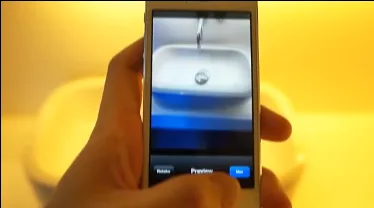
해당 영상은 언론 매체 또는 사용자들이 이 앱을 다른 누군가에게 소개할 때도 유용하게 활용되었다. 실제로 영상을 업로드한 이후 보도된 기사들을 조사해 보면 해당 영상을 인용하여 YouTube 영상을 바로 볼 수있게 조치한 경우가 많았던 것을 확인할 수 있었다.
⑤ No 마케터, 그리고 Zero 마케팅
Sleep If U Can 출시 후 1년 동안 거둔 다양한 마케팅 성과가 놀라운이유는 전문적인 마케터도 없이 개발자 혼자 시작했고 심지어 광고비에단 1원도 사용하지 않고 진행했다는 점이다. 앞서 사례로 언급된 온라인커뮤니티에 게시글을 올리는 것은 10분도 걸리지 않고 심지어 비용도 들지 않는다. 게다가 아이디어가 뾰족하게 기획되어 MVP로 나온 덕분에 Sl eep If U Can은 알람을 ‘사진으로 해제’한다는 독창적인 기능 하나만으로 잠재고객에 큰 저항을 받지 않고 핵심가치를 효율적으로 전달할 수있었다. 문제의 본질을 찾아 해결을 도와주면 사람들이 열광한다는 것을알 수 있는 대목이다. 많은 스타트업이 제품/서비스의 출시 직후 초기 시장 진입을 힘들어하는데, 그에 대한 가장 큰 원인은 그들의 MVP가 MVP 가 아니라는 것에 있다. 잠재고객이 핵심기능이 무엇인지 인식하지 못할만큼 여러 기능이 가치 제안되고 있을 가능성이 높다. 그럴 때는 핵심기능을 재정의하고 모조리 덜어내야만 살아남을 수 있을 것이다.
3.1.4 Build-Measure-Learn Cycle
① 데이터 수집 및 분석 도구 활용한 서비스 개발 우선순위 결정
제품/서비스를 개발하는 기술 분야 스타트업의 입장에서는 개발해야 할기능들이 항상 산더미처럼 쌓여있다. 업계에서는 그것을 백로그(backlog) 라고 부른다. 무한히 쌓여가는 백로그들 사이에서 지금 당장 해야 하는 일을 찾아내는 것은 생각보다 간단하지 않다. 유한한 시간을 최대한 효율적으로 활용하려면 우선순위를 잘 결정해야만 한다. 이를 위해선 데이터수집 및 분석이 필수적이다.
< 그림 20. BugSense & Localytics 주요 화면 (딜라이트룸, 2013) >
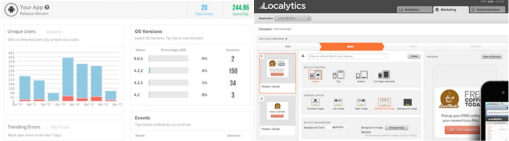
Sleep If U Can 팀은 MVP 출시 이후 유입되기 시작하는 사용자들의반응을 다양한 도구를 통해 수집하였다. 모바일 앱의 버그 및 크래시 분석 도구인 BugSense를 통해 앱에서 발생하는 버그, 충돌, 오류를 실시간으로 모니터링하고 앱의 안정성 개선을 위해 충돌 로그, 디바이스 정보,운영체제 버전 등을 수집하여 문제의 원인을 파악하였다. 또 다른 모바일앱 및 웹 애플리케이션 분석 도구인 Localytics를 통해서는 앱 사용자의행동 분석, 참여도, 리텐션을 추적하고 분석하였다. [그림 20]
Localytics로 앱을 이용하는 일간 사용자수와 하루에 앱이 실행되는 횟수를 분석하여 일정한 패턴이 있는 것을 발견할 수 있었다. 2012년 11월 5일부터 12월 16일까지 Sleep If U Can의 Sessions, Users를 분석한 결과에 따르면, 월요일부터 금요일까지 점차 낮아지다가 주말에 크게 떨어지는 경향을 확인할 수 있었다. [그림 21] 이러한 데이터를 바탕으로 사용자들이 주로 평일에 알람 앱을 사용하고 주말에는 비교적 적게 쓰는 것으로 해석할 수 있었기에 Sleep If U Can 팀은 사용이 몰려드는 요일과시간을 고려해 앱의 다양한 이슈에 대해 기술적인 대응을 할 수 있었다.
< 그림 21. Localytics로 Sleep If U Can Users/Sessions 분석 (딜라이트룸, 2013) >
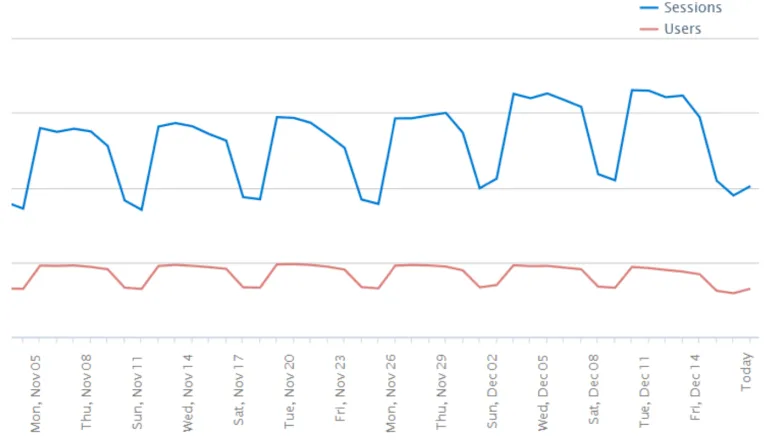
Sleep If U Can 팀은 Localytics를 활용하여 Screen Flow를 통해 [그림 22]와 같이 사용자의 행동 데이터를 시각적으로 분석하기도 하였다. 특정화면에서 사용자가 이탈하는 비율을 확인할 수 있는데, 'Main'에서 'End Session'으로 24%, 'Set Alarm'에서 ‘End Session'으로 90%의 사용자가이동한 것을 확인할 수 있었으며 해당 지점에서 사용자가 목표를 완료했거나 앱을 종료했다는 해석이 가능하다. 이를 통해 사용자가 앱의 어떤주요 기능을 자주 사용하는지 분석하여 서비스 기획에 반영할 수 있었다.
< 그림 22. Localytics로 Sleep If U Can Screen Flow 분석 (딜라이트룸, 2013) >
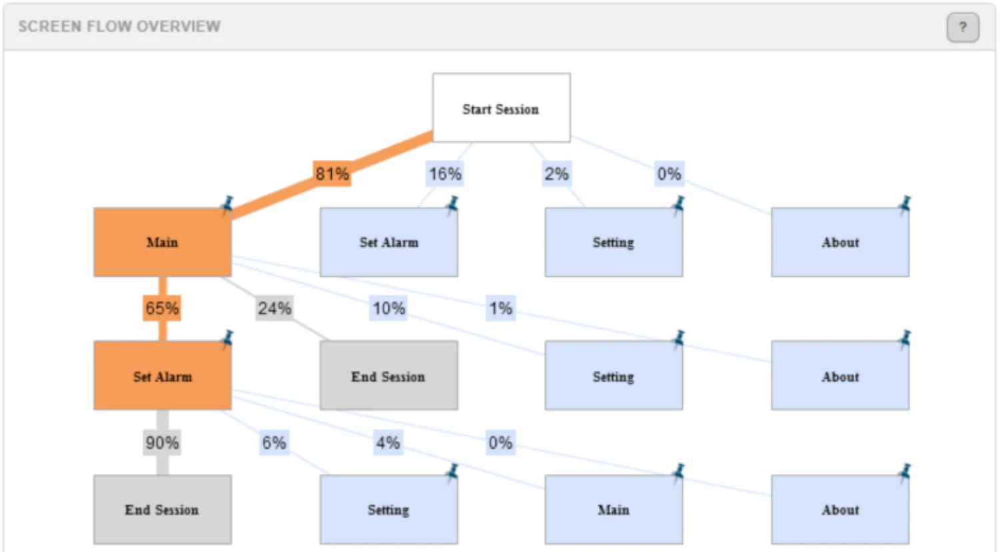
2012년 당시만 해도 수많은 스마트폰 제조사에 의해 무수히 많은 모델이 쏟아지던 시기였기에 사용자가 쓰는 디바이스가 매우 다양했었다. 그때문에 각 디바이스에 앱의 기능과 디자인을 최적화시키는 것은 굉장히많은 공수가 투입되는 일이었다. 심지어 같은 제조사의 모델이어도 세대가 다르면 다른 기기인 것이나 마찬가지였다. 실제로 구글 플레이에는 자신의 스마트폰 기종에서는 앱이 정상적으로 작동되지 않는다는 리뷰가종종 올라오기도 했었다. 그래서 Sleep If U Can 팀은 주요 스마트폰 모델의 공기계를 모두 직접 구매해서 일일이 테스트하는 방식도 활용했다.
< 그림 23. Localytics로 Sleep If U Can 사용자 접속 장치 분석 (딜라이트룸, 2013) >
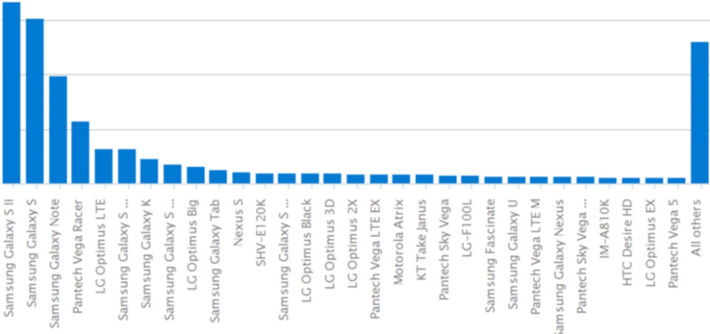
그리고 효과적인 스마트폰 디바이스 최적화 우선순위를 정하기 위해사용자 접속 장치를 주기적으로 분석하여 가장 많이 사용하는 디바이스순으로 품질관리를 하며 관련 이슈를 줄여 나갔다. [그림 23]
Sleep If U Can 앱은 처음부터 글로벌로 진출한 알람 앱이었기 때문에언어와 관련된 이슈도 항상 존재하였다. 한국어와 영어 외에 어떤 언어를먼저 추가해야 할지 우선순위를 결정하기가 어려워서 사용자 접속 국가분석을 통해 유입되는 나라를 지켜보며 새로운 언어를 하나씩 추가하였다. [그림 24] 이후 특정 국가의 사용량이 많아지면 해당 국가의 언어에맞게 기능의 명칭에 사용된 표현과 용법을 더욱 자연스럽게 번역해 나갔다. 이 과정에서는 각 국가의 열성 사용자들이 먼저 Sleep If U Can 팀에적절한 번역을 제공해 주기도 했고 덕분에 수월하게 진행될 수 있었다.
< 그림 24. Localytics로 Sleep If U Can 사용자 접속 국가 분석 (딜라이트룸, 2013) >
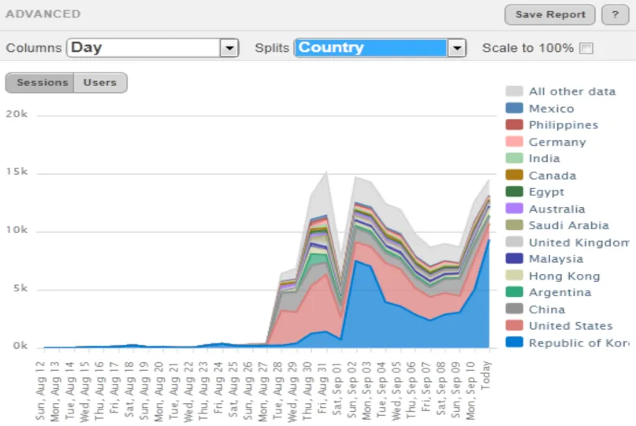
② 구글 플레이 평점 및 리뷰 데이터 분석
Sleep If U Can 앱은 출시 직후 곧바로 글로벌로 진출하였고 3주 만에 25개국에서 1위를 달성하였다. 이러한 성공적인 초기 시장 진입이 잠깐의 화제로 그치지 않기 위해 팀은 고군분투하였다. 앞서 설명한 데이터수집 및 분석 도구를 활용한 개발 우선순위 결정 과정도 그런 노력의 일환이었다. 팀의 데이터 기반 의사결정은 과연 성공적이었는지 구글 플레이 평점 및 리뷰 데이터를 상세하게 분석하여 확인해 보고자 한다.
< 표 6. 구글 플레이 Sleep If U Can 평점 데이터 분석 (본인 작성) >
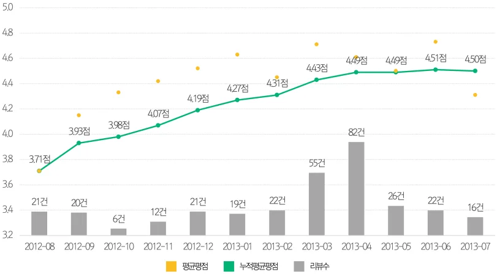
우선 Python 3에서 google_play_scraper 패키지를 활용하여 2012년 8 월부터 2013년 7월까지 구글 플레이 평점 및 리뷰 데이터를 추출하였다.
해당 기간 동안 한국어로 작성된 리뷰는 1,327개, 영어로 작성된 리뷰는총 322개였다. 날짜, 리뷰, 평점 등을 추출하였고 Sleep If U Can 앱이글로벌로 시작한 점을 고려하여 영어로 작성된 리뷰를 분석 대상으로 선정하였다. 추출된 데이터는 재가공하여 1개월 단위로 평균평점, 누적평균평점, 리뷰수로 정리하여 [표 6]을 작성하였고 [그림 25]로 시각화하였다.
< 그림 25. 구글 플레이 Sleep If U Can 평점 데이터 분석 (본인 작성) >
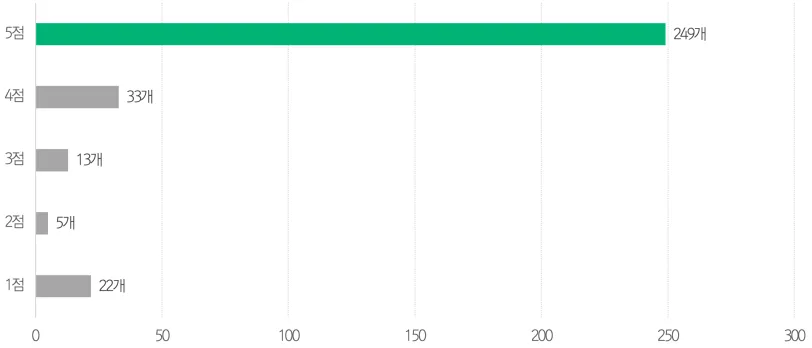
1년 동안 한 달 평균 약 27개의 리뷰가 작성되었는데, 출시 직후 3개월동안은 평점이 4점을 넘기지 못했다는 사실을 알 수 있었다. 이는 그만큼 낮은 점수의 리뷰가 많았다는 것을 시사한다. 해당 리뷰 내용들을 정성적으로 분석해보면 사용자들의 주요 불편과 불만은 다음과 같이 정리된다. 첫 번째는 ‘사진으로 해제’와 관련된 이슈로 사진 설정 자체가 되지 않는 경우, 알람이 울렸을 때 아무 사진이나 촬영해도 알람이 해제되는 경우 등으로 정리된다. 두 번째는 스마트폰의 강제 종료 기능을 통해앱을 끌 수 있다는 것인데, 사용자가 알람을 해제할 수 있는 유일한 방법이 사진 촬영이 아니라는 점을 깨달은 후 ‘사진으로 해제’ 기능을 잘 활용하지 않게 된다는 이야기였다. 얼핏 보면 유치한 투정처럼 보일 수 있지만 이 앱의 본질적 가치가 훼손되는 상황으로 여겨졌기 때문에 심각한버그로 인식할 수 있었다. 마지막으로 비인기 스마트폰의 최적화 이슈를포함하여 각종 버그와 관련된 내용들이 주를 이루고 있었다.
팀은 각종 데이터 수집 및 분석 도구를 활용하여 수많은 백로그를 형성하며 개발 우선순위를 신중히 결정하였다. 앱이 지향하는 본질은 사용자가 잠에서 완벽히 깰 수 있게 도와주는 것이고 그 핵심기능은 ‘사진으로 해제’였다. 하지만 당시만 하더라도 영상인식 알고리즘이 완벽하지 않았기 때문에 어느 정도의 오류는 있을 수밖에 없었다. 팀 자체적으로 분석한 결과 95%의 사용자가 촬영 3회 이내 알람 해제에 성공했지만, 나머지 5%는 그렇지 못한 것을 파악했다. 그 후 팀에서는 그 문턱(threshold) 을 점차 낮추는 것에 집중했고 점점 사용자 경험이 좋아지게 된 것이다.
알람을 사진으로 해제하지 않아도 앱 강제 종료를 통해 알람을 끌 수있다는 제보를 받은 이후 팀에서는 그것조차 불가능하게 만드는 것에 전력을 다했다. 결국 해당 기능을 구현해냈고 이후 사용자들은 높은 평점과함께 ‘앱이 더 악마 같아졌다.’라는 말로 칭찬을 남기기도 했다.
한편, 사용자가 상대적으로 적은 스마트폰 기종은 앱 업데이트마다 ‘사진으로 해제’ 기능이 정상적으로 작동되지 않는 문제가 빈번하게 보고되었다. 그래서 2012년 10월 Sleep If U Can 팀은 ‘흔들어서 해제’라는 기능을 새롭게 추가하여 ‘사진으로 해제’ 기능의 대안을 제공하였다.
< 그림 26. 2012. 08 ~ 2013. 07 구글 플레이 Sleep If U Can 평점별 집계 (본인 작성) >
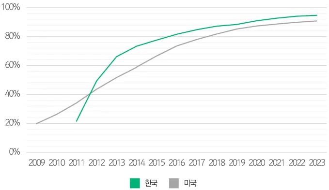
궁극적으로 팀은 Build-Measure-Learn Cycle을 무수히 반복하며 수준높은 데이터 기반 의사결정을 이룩했다. 그 결과 평점 5점 리뷰 비중이점차 증가하였고 누적평균평점은 2012년 8월 3.71점에서 2013년 7월 4.50점으로 대폭 개선된 유의미한 성장을 이뤄냈다. [그림 25] [그림 26]
3.1.5 유효한 학습 (Validated Learning)
Sleep If U Can 팀은 MVP를 개발하고 Build-Measure-Learn 사이클을속도감 있게 회전시키면서 사용자가 진정으로 원하는 것을 알아내는 유효한 학습에 온전히 집중하였다. 끊임없는 실험을 이어가며 낭비가 되는 일은 처음부터 시작하지 않으려 부단히 애를 썼고, 분석을 통해 사용자에게혜택을 주는 것으로 평가된 가치 있는 일에는 자원을 아낌없이 투입하였다. 무조건 깨운다는 일념으로 알람 앱의 본질을 쫓은 덕분에 사용자는연일 늘어났고 초기에 성공적으로 진입한 시장에서의 위치를 견고히 다지며 더욱 확장할 수 있는 튼튼한 기반을 마련하게 되었다.
3.1.6 스마트폰 시장 급성장으로 인한 선점우위 효과 극대화
① 미션 알람으로 떠오른 알람 앱 시장의 퍼스트 무버
Sleep If U Can 앱은 2012년 8월 구글 플레이, 2013년 3월 애플 앱스토어에 각각 출시되고 빠른 속도로 국가별 알람 앱 1위를 차지해 나갔다.
이처럼 괄목할 만한 성과를 이뤄내면서 신재명은 알람 앱의 잠재력과 성공 가능성을 확인하였고 2013년 5월 딜라이트룸을 설립하기에 이른다.
2012년 당시 알람 앱 시장은 이미 다양한 알람 앱이 존재했지만 대부분시간을 설정하고 소리를 울리는 기능에 머물러 있었고, 사람들은 더 효과적인 알람 앱을 요구하고 있었다. 시장은 아직 충분히 포화되지 않은 상태였기 때문에 혁신적인 기능을 가진 앱이 얼마든지 진입할 여지가 있었다. 그 틈을 타서 Sleep If U Can 앱은 사진을 찍어야 알람이 꺼지는 일명 ‘미션 알람’이라는 독창적인 방식으로 기존 알람 앱들이 결코 풀어내지못했던 다시 잠드는 문제를 효과적으로 해결하며 시장의 이목을 집중시켰다. 그리고 출시 직후부터 전략적인 마케팅을 펼치며 구글 플레이 및 애플 앱스토어의 세계 다양한 국가에서 알람 앱 1위를 달성할 수 있었다.
이는 사용자의 유기적인 유입을 만들어냈으며 조직 내부적으로 탄탄하게구축된 Build-Measure-Learn 사이클의 기민한 전개를 기반으로 충성도 높은 초기 사용자층을 확보하는 것으로 연계되었다. 결과적으로 딜라이트룸은 이렇게 알람 앱 시장에서 선발주자로서 우위를 가지며 후발주자들이범접하기 어려운 진입 장벽을 단단하게 구축할 수 있었다.
② 스마트폰 대중화로 인한 모바일 앱 마켓플레이스의 급성장
한편, 스마트폰 시장의 상황은 예사롭지 않았다. 역사적으로 그 어느기술보다도 빠르게 확산되며 새로운 기록을 연일 써 내려가고 있었다. 정보통신정책연구원에서 발표한 한국 스마트폰 보급률, Statista에서 확인한미국 스마트폰 사용자수, 그리고 미국의 인구통계를 기반으로 한국과 미국의 스마트폰 보급률 추이를 [그림 27]과 같이 정리하였다. 2010년대에는 3G/4G 네트워크 확산과 소셜 미디어 유행을 바탕으로 전 세계적으로스마트폰 보급률이 가파르게 증가하였다. 특히 한국은 2011년 기준 스마트폰 보급률이 22%에 불과했지만 2012년 49%, 2013년 66%를 달성하여그야말로 초고속 성장을 보여주었다.
< 그림 27. 한국 및 미국 스마트폰 보급률 추이 (본인 작성) >
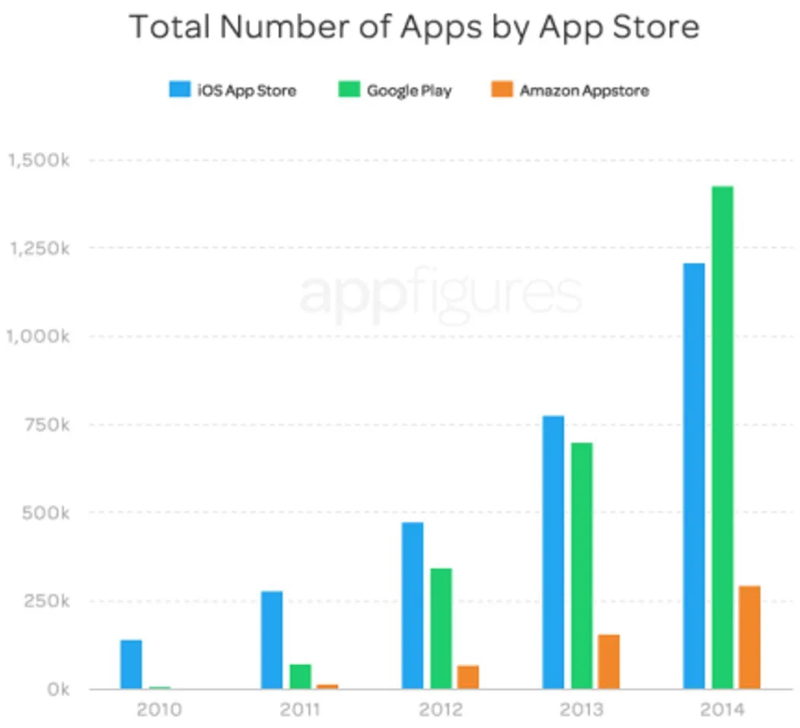
스마트폰 시장이 커져가면서 스마트폰에 설치하여 사용할 수 있는 앱시장도 동반 성장하였다. 안드로이드 진영을 이끌며 운영체제, 마켓플레이스를 잡은 구글과 하드웨어, 운영체제, 마켓플레이스 모두를 독자적으로 구축한 애플이 양강구도를 형성하였고 아마존도 뒤늦게 가세하여 시장을 더욱 뜨겁게 달궜다. 대부분 앱들이 구글 플레이와 애플 앱스토어에함께 등록한다는 점을 고려하면 시장에 나온 앱의 개수는 앱을 가장 많이 보유한 마켓플레이스의 수를 참고하면 된다. [그림 28]를 보면 2010년약 10만 개 수준에서 2014년 약 130만 개까지 마켓플레이스에 출시된앱이 기하급수적으로 늘어난 것을 확인할 수 있다.
< 그림 28. 주요 앱스토어별 총 앱 수 (ZDNet, 2015) >
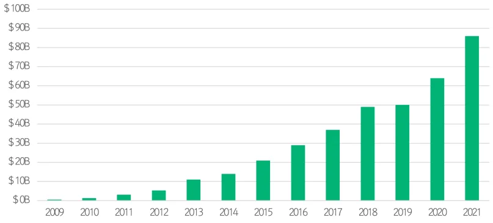
애플 앱스토어는 2011년 7월에 누적 150억 건의 다운로드, 개발자에지급된 수익만 25억 달러, 2014년 6월에는 누적 750억 건 다운로드를 돌파하였으며 2015년 1월에는 개발자에 누적 250억 달러 수익이 지급되었다고 밝혔다. 또한 Analysis Group에서 발표한 자료에 따르면 애플 앱스토어의 결제금액이 2009년 6억 달러 수준에서 2014년 140억 달러로 5년만에 무려 20배 이상의 규모로 증가하며 성장하였다. [그림 29]
< 그림 29. 2009~2021 애플 앱스토어 결제금액 (Analytics Group, 2022) (본인 재가공) >
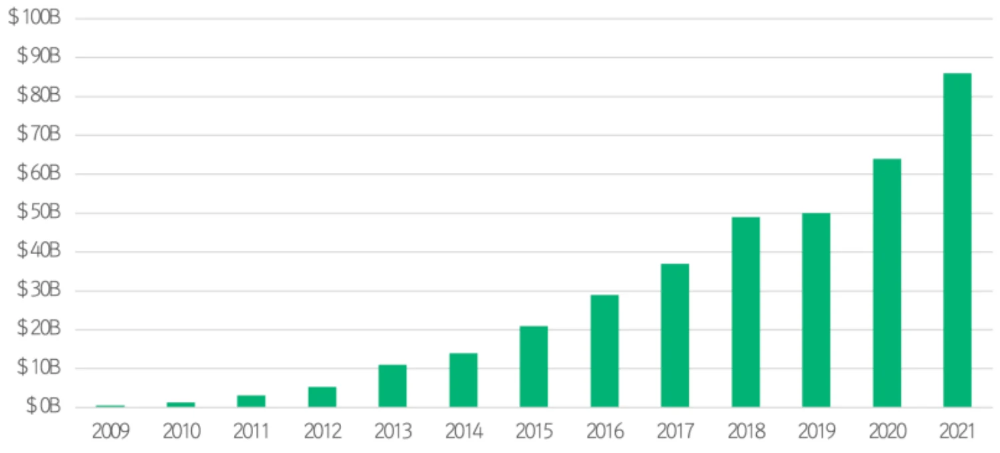
③ 선점우위 효과의 극대화가 만든 알람 앱 시장에서의 확고한 안착
처음 스마트폰을 구매한 사용자의 입장에서 알람 앱을 설치할 때, 기존에 알고 있는 브랜드가 전혀 없는 상태나 마찬가지다. 이 상황에서 대부분 사용자들은 구글 플레이 또는 애플 앱스토어와 같은 마켓플레이스에들어가서 ‘알람(Alarm)'이라는 키워드를 검색하게 되고 자연스럽게 상위에 노출되고 있는 앱을 선택하여 설치하게 될 것이다. 딜라이트룸이 초기형성한 사용자층은 새로운 사용자를 끌어들이는 네트워크 효과를 선명하게 만들어냈다. 실제로 당시 구글 플레이와 애플 앱스토어에서 ‘알람’이라는 키워드로 검색하면 대부분 국가에서 Sleep If U Can이 1순위로 노출되었고 그 외 국가에서도 최소 3순위 이내로 상위에 랭크되었다. 게다가 Sleep If U Can은 2013년 7월 기준으로 평점 4.5점, 리뷰수만 2천 개에 달하여 사용자의 구매의사결정에 큰 영향을 끼칠 수 있었다. 알람 앱의 특성상 유통을 앱 마켓플레이스에 의존하는 구조를 고려하면 딜라이트룸이 차지한 선점우위 효과에 의해 발생하는 일종의 메커니즘은 향후딜라이트룸의 성장에도 굉장히 유효하였다고 평가된다.
딜라이트룸이 Sleep If U Can으로 알람 앱을 처음 출시한 2012년부터지금까지 스마트폰과 앱 마켓플레이스 관련 시장은 멈추지 않고 높은 성장률을 기록하였다. 스마트폰이라는 하드웨어의 확산은 약 15년에 걸쳐진행되었고, 2023년 기준 스마트폰 보급률 95%를 달성한 한국을 필두로주요 선진국도 90%대에 접어들고 있다. 그와 동시에 앱 마켓플레이스는구글과 애플이 각 진영에서 독점적 지위를 확고히 장악한 후 엄청난 이익을 창출하고 있었다. 그 곁에서 알람 앱 부동의 1위로 달려온 딜라이트룸은 그 거대한 시장이 일으키는 고속 성장의 결실을 알람 앱 가장 높은 자리에서 아주 오랜 시간에 걸쳐 가져갈 수 있는 기회를 잡은 것이다.
결과적으로 딜라이트룸은 알람 앱 시장의 퍼스트 무버로서 사업을 전개해 나가며 브랜드 인지도와 네트워크 효과를 이용하여 경쟁에 대한 진입 장벽도 성공적으로 쌓아나갔다. 그리고 스마트폰의 대중화로 인한 앱마켓플레이스의 급성장은 딜라이트룸의 선점우위 효과를 더욱 극대화시켰다. 이로써 딜라이트룸은 알람 앱의 초기 시장에 성공적으로 진입한 후시장에 확고한 자리를 차지하며 안착할 수 있게 되었다.
3.2 비즈니스 모델 최적화 및 성장 가속화
2014년 1월 딜라이트룸은 알람 앱 카테고리 1위를 더욱 견고히 하고자앱의 BI(Brand Identity)를 ‘알라미(Alarmy)'로 리브랜딩하였다. 본 연구에서는 알람이라는 보통 명사와 혼동을 방지하기 위해 새로운 BI는 영문 표기인 ‘Alarmy'로 통일하였다.
3.2.1 Alarmy의 비즈니스 모델
① 인앱 광고 및 유료 다운로드 모델 (2012~2018)
딜라이트룸이 구글 플레이에 앱을 처음 출시했을 때는 무료 다운로드로 제공했었고 별도의 수익구조가 없었다. 이후 안드로이드 앱의 수익화를 위해 인앱 광고를 도입하였다. 구글 플레이의 리뷰 데이터를 분석한결과 확인한 결과, 2012년 11월에 업데이트한 2.2 버전부터 인앱 광고를시작한 것으로 확인되었다. 그리고 2023년 3월 애플 앱스토어에 출시한 i OS 앱은 처음부터 유료 다운로드만 제공하였고 동시에 구글 플레이에도 기존 무료 버전 외 유료 버전의 앱을 별도로 출시하였다. 2014년 1월에는 애플 앱스토어에 무료 버전 앱을 출시하여 인앱 광고를 적용하였다.
즉, 2014년 기준으로 딜라이트룸은 인앱 광고와 유료 다운로드 등 2가지수익 구조를 채택하여 초기 비즈니스 모델을 설계하였다. [그림 30]
< 그림 30. 2014년 딜라이트룸의 비즈니스 모델 (본인 작성) >
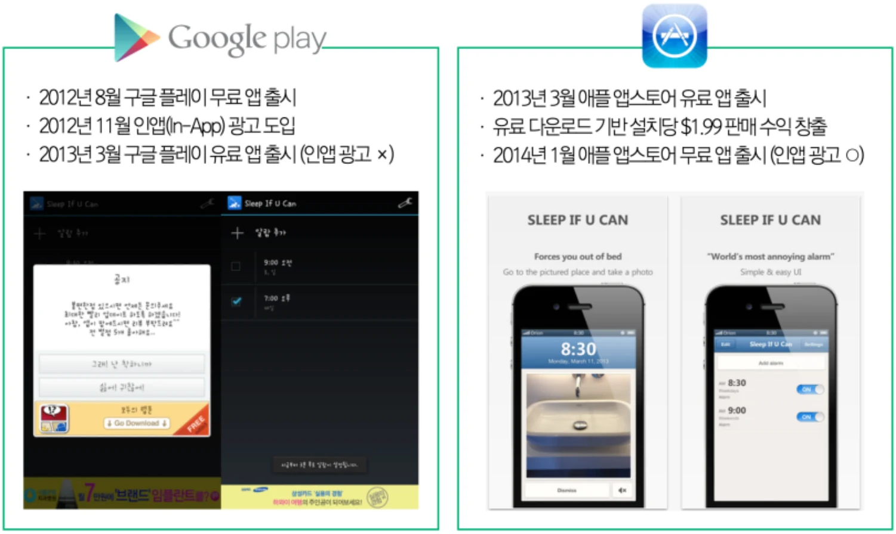
② 비즈니스 모델에 의한 사업적 성과 (2012~2015)
초기 딜라이트룸은 Alarmy의 비즈니스 모델로 인앱 광고와 유료 다운로드에 집중하였다. 2012년 11월 안드로이드 앱에 인앱 광고를 도입하기시작하였고 2013년 3월 iOS 앱과 안드로이드 앱을 유료로 출시하였다.
유료 앱의 경우에는 인앱 광고가 없었기 때문에 안드로이드 스마트폰 사용자가 광고를 원하지 않는 경우 유료 앱을 선택하는 것이 가능하였다.
이후 2014년 1월에는 iOS 앱도 무료로 출시되어 인앱 광고를 적용하였고 덕분에 아이폰 사용자에게도 선택지가 마련되었다.
딜라이트룸으로부터 창립 이후 연도별 재무성과와 관련된 자료를 확보할 수 있었다. 해당 자료를 검토하여 2012년부터 2015년까지 매출액과영업이익, 연도별 비즈니스 모델을 다음과 같이 정리하였다. [표 7]
< 표 7. 2012~2015 딜라이트룸 연도별 실적 및 비즈니스 모델 (본인 재가공) >
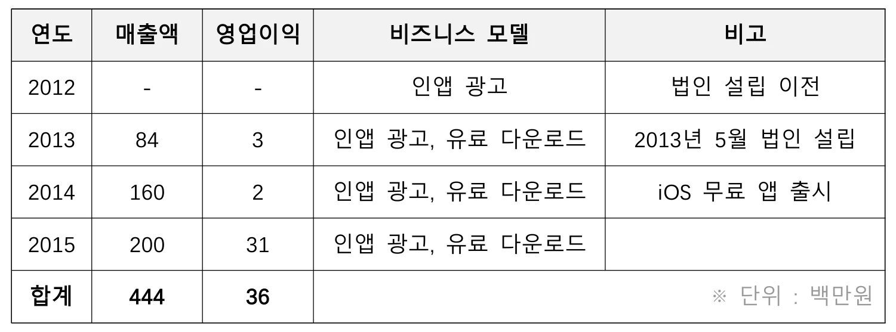
2012년에는 인앱 광고만 존재하였고 2013년 3월 이후부터는 유료 다 운로드가 추가되었다. 하지만 딜라이트룸은 2013년 5월에 법인이 설립되었기 때문에 2012년 8월부터 2013년 4월까지의 재무적 성과는 확인할수 없었다. 2013년에는 약 8,400만원의 매출액을 기록하였고 해당 연도의 실제 영업기간이 7개월인 점을 고려하면 월 1,200만원의 매출이 발생한 것으로 추산된다. 2014년에는 매출액 약 1억 6,000만원을 기록하였고월 환산 시 약 1,300만원으로 소폭 상승한 것을 확인할 수 있다. 마지막으로 2015년에는 매출액 약 2억원을 기록하였고 월 환산 시 약 1,600만원으로 25% 이상 상승한 것으로 분석하였다. 비록 매출액 규모가 크진않았지만 3년 동안 꾸준하게 성장하였고 2015년에는 영업이익률이 15%를 넘어 성장의 잠재력을 보여주었다고 평가된다.
3.2.2 광고 최적화 통한 수익성 개선
① 광고 네트워크와 미디에이션 개념
광고 네트워크는 광고주와 앱 개발자를 연결하는 중개 플랫폼이다. 광고주는 광고 네트워크를 통해 다양한 앱에 광고를 게재하고 앱 개발자는이를 통해 수익을 창출한다. 대표적으로 Google AdMob, AppLovin Max, Unity Ads, Meta Audience Network 등이 있다. 수익을 지급하는 방식으로는 주로 CPI, CPM, CPC 등의 용어로 설명된다. [표 8]
< 표 8. 주요 디지털 광고 용어 정리 (본인 작성) >
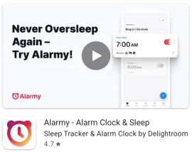
미디에이션(mediation)은 여러 광고 네트워크를 한 플랫폼에서 관리하고 광고 수익을 최적화하는 기술이다. 앱 개발자가 광고 네트워크를 직접연결하지 않고 미디에이션 플랫폼을 통해 자동으로 가장 높은 수익을 제공하는 광고를 선택하게 한다. 사용자가 앱을 열거나 특정 행동을 취할때 광고를 표시해야 하는 상황이 발생하면 미디에이션 플랫폼이 여러 광고 네트워크를 실시간으로 비교하여 가장 높은 입찰가를 제시하는 광고를 선택한다. 이를 통해 광고 요청 대비 노출 비율(Fill Rate)과 1,000회노출당 수익 eCPM(effective Cost Per Mille)을 극대화할 수 있다. ② Alarmy 광고 최적화 전략2015년까지 Alarmy의 사용자가 지속적으로 증가하였음에도 불구하고 딜라이트룸의 연 매출은 약 2억원에 그쳤다. 딜라이트룸은 대부분 매출이 광고에서 발생하고 있었기 때문에 수익성을 개선하기 위해 광고 최적화를 핵심전략으로 삼았다.
우선 단일 광고 네트워크에 의존하지 않고 여러 광고 네트워크 테스트를 꾸준하게 진행하여 효율을 분석하고 선별적으로 사용하는 방식을 택하였다. 이를 위해 10~20개 정도의 광고 네트워크를 사용하며 매주 효율을 분석하여 우선순위를 조정하고 새 광고 네트워크를 추가하거나, 기존광고 네트워크를 제거하는 작업으로 이어진다. 그 밖에도 지면마다 광고갱신 주기(refresh rate)와 광고 게재 빈도(frequency cap)를 조절하거나, 광고 포맷을 A/B 테스팅을 하기도 하는 등 다양한 실험을 해보며 최적화를 진행하였다.
해외 사용자가 85%를 차지하는 Alarmy 특성상 각 국가의 광고 영역에대한 최적화도 필수적이다. 사용자가 많은 국가의 경우에는 해당 국가의로컬 광고 네트워크에 직접 컨택하여 테스트를 진행하기도 하고 국가별로 분류해서 위에서 언급한 테스트를 진행하기도 하였다.
위의 설명과 같이 광고 최적화를 위해서는 매우 다양한 전략을 끊임없이 수립하고 시도하여야 한다. 다만 광고 최적화에 행해지는 실험들은 모두 매출과 직결되는 부분이기 때문에 정확도가 매우 중요하다. 따라서 외부 도구에 의존하지 않고 자체적으로 필요한 도구를 만들기도 하였다.
< 그림 31. 광고 판매 플랫폼(SSP) 작동 방식 (Appsflyer) >
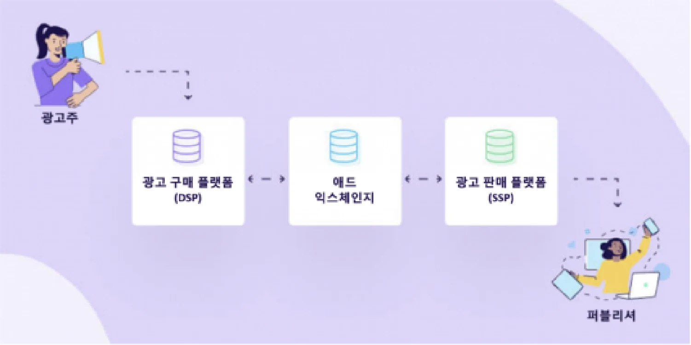
Alarmy는 2016년부터 Twitter 자회사 MoPub이라는 광고 판매 플랫폼 (SSP, Supply Side Platform)을 Primary SSP로 활용하였다. 광고 판매 플랫폼은 광고 지면을 보유하고 있는 퍼블리셔가 이용하여 광고 지면을 판매하고, 광고 노출을 원하는 광고주는 광고 구매 플랫폼(DSP, Demand Si de Platform)을 이용하여 광고 노출 서비스를 구매한다. 이 두 플랫폼은애드 익스체인지(Ad Exchange)를 통해 연결된다. [그림 31]
Alarmy가 MoPub을 이용하면서 180개 이상의 DSP와의 실시간 입찰 교환을 통해 글로벌 광고 수요에 접근할 수 있었고, 그 결과 광고 요청 대비 실제 노출한 광고 비율(Fill Rate)이 향상되고 eCPM이 증가하였다. 이를 통해 실적을 매우 크게 개선할 수 있었다. [그림 32]
< 그림 32. MoPub 사용 후 Alarmy 매출 성장 추이 (MoPub, 2017) >
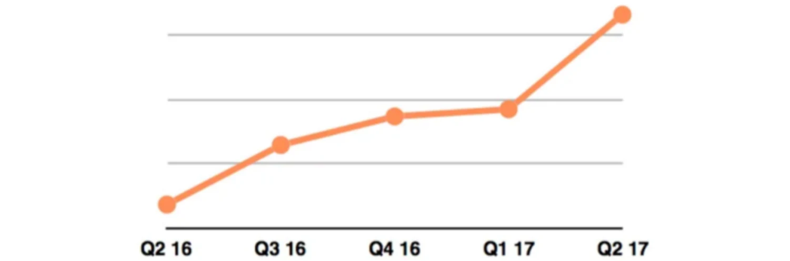
결과적으로 광고 최적화라는 핵심전략을 바탕으로 매출액과 영업이익은 매우 크게 성장하였다. 당장 광고 최적화 전략에 집중한 2016년에는전년 대비 매출액 260%, 영업이익 545% 성장하였고, 2017년에는 전년대비 매출액 261%, 영업이익 750%를 성장을 기록하였다. 뿐만 아니라 2 017년 영업이익률은 65%로 아주 놀라운 수준에 이르렀다. [표 9]
< 표 9. 2012~2018 딜라이트룸 연도별 실적 (본인 재가공) >
3.2.3 사용자, 제품, 데이터 중심의 기술 리더십
딜라이트룸이 자체적으로 발간한 <Delightroom Culture Deck 2022>에따르면 딜라이트룸의 DNA는 다음과 같이 정의하고 있다. [표 10]
< 표 10. 딜라이트룸의 DNA (딜라이트룸, 2022) (본인 재가공) >
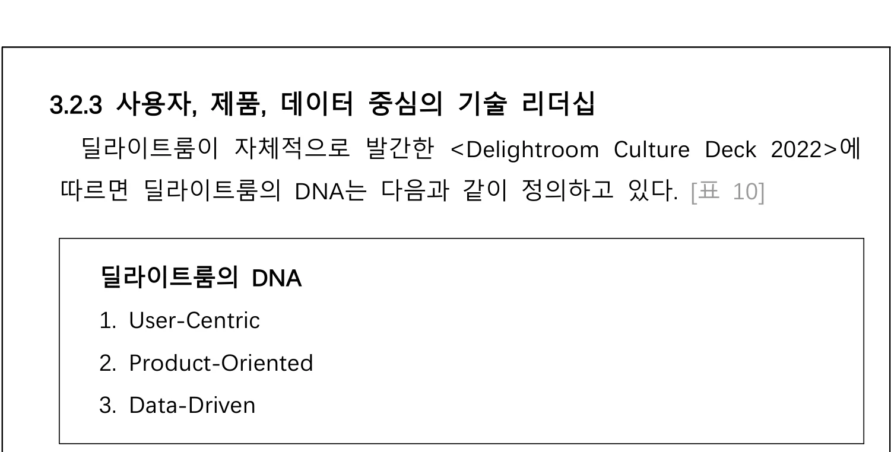
딜라이트룸의 DNA가 어떻게 조직의 핵심활동으로 이어지는지, 그것이 Alarmy와 딜라이트룸의 성장에 어떤 영향을 끼치는지 확인하고자 한다.
① 사용자 중심 (User-Centric)
알람 앱 1위라는 성과는 다양한 방식으로 증명할 수 있다. 평점, 다운로드수, 매출 등 기준에 따라 순위는 달라질 수 있다. 정확한 순위를 확인하려면 전문적인 분석 도구를 활용하는 것이 가장 정확하다. 간편하면서도 유효한 방법으로는 구글 플레이, 애플 앱스토어에 직접 들어가서 ‘알람(Alarm)'을 검색했을 때 알람 앱들이 랭크되는 순서가 곧 그 카테고리에서의 순위라고 간주할 수 있다.
< 그림 33. 미국 구글 플레이 알람 앱 상위 3개 (Google Play, 2024) (본인 재가공) >
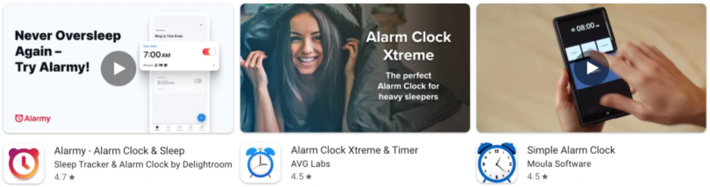
현재 미국 기준으로 구글 플레이에서 알람을 검색하면 삼성, 구글 앱을 제외한 상위 3개의 서드파티 앱은 Alarmy, Alarm Clock Xtreme & Timer, Simple Alarm Clock 순으로 확인된다. 이들 중에서도 Alarmy는 평점이 4.7점으로 3개 앱 중에서 가장 높은 것을 알 수 있다. [그림 33]
이렇게 높은 평점이 가능했던 것은 사용자 중심에 기반한 사고와 의사결정 덕분이라고 할 수 있다. 딜라이트룸은 사용자 입장의 POV(point of view)를 강조하며 사용자의 입장에서 생각하고 서비스를 바라보는 것을매우 중요하게 여긴다. 그래서 리더들은 매주 VOC(Voice of Customer)를함께 검토하며 앞으로 무엇에 집중해야 할지 논의한다.
신재명은 2017년 8월 자신의 블로그에서 CS(Customer Service)의 중요성에 대해 언급하였다. 당시 하루에만 1,000여 개의 리뷰와 100여 건의메일이 온다고 밝혔다. 그럼에도 불구하고 그가 대부분 직접 처리하였다 고 한다. 사용자들이 앱을 어떻게 사용하는지, 앱을 사용하면서 어떤 것을 필요로 하는지, 그리고 어떤 것을 싫어하는지 정확히 알기 위해서 그는 그러한 수고로움을 감수했던 것이었다.
실제로 한 사용자는 낮은 평점과 불만이 섞인 리뷰를 남겼는데, 하필다른 사용자의 ‘좋아요’까지 받게 되어 최상단에 노출되게 되었다. 그는긴급히 이 리뷰에 대응하였고 다행히 사용자가 만족하여 리뷰 내용이 칭찬으로 수정되었고 평점도 5점으로 변경하면서 결국 최상단의 리뷰가 평점 5점과 ‘좋아요’가 많은 리뷰로 탈바꿈하게 되었다. [그림 34]
< 그림 34. 적극적인 리뷰 대응 사례 (신재명 대표 개인 블로그, 2017) >
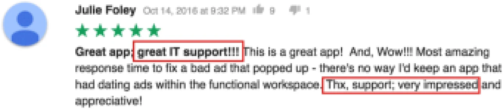
딜라이트룸에는 CS를 전담하는 팀이 있다. 고객 피드백에 직접 댓글을달기도 하고 티켓 처리 활동을 통해 유의미한 정보를 수집한다. 그런 활동을 통해 지금처럼 높은 평점을 유지하여 사용자 획득(User Acquisition) 에 기여하고, 제품 개선에 필요한 다양한 인사이트를 도출하며, 문제 상황에 대한 빠른 감지 및 피해 최소화를 목표로 한다. 이들의 존재와 역할은 사용자 그 자체에 있다고 볼 수 있다. 사용자 중심에 대한 진심 어린노력은 기존 사용자가 다른 대안을 찾지 못하게 하고 더욱 Alarmy에 의존하게 만든다. 이에 대해서는 락인 효과(Lock-in Effect) 분석에서 자세히다루도록 하겠다.
② 제품 지향 (Product-Oriented)
딜라이트룸은 최상의 제품을 만드는 것을 지향하였다. Alarmy의 정체성은 알람 그 자체에 있기 때문에 제 시간에 울리는 것이 기본이자 본질이다. 하지만 너무나도 다양한 스마트폰 종류와 각기 다른 운영체제, 앱 버전 등으로 인해 알람에 오류가 생기는 경우가 빈번하게 있었다. 게다가사용자마다 알람 앱을 사용하는 패턴이 다르고 알람을 해제하는 순간도각기 다른 방식으로 접근한다. 모든 경우의 수에 대비하기 위해 개발팀에서는 100여 종에 가까운 스마트폰을 직접 구입해 언제든 테스트할 수 있는 환경을 구축하고 활용하였다. 이러한 노력 덕분에 앱에 문제가 생겨발생하는 고객의 불편을 최소화할 수 있었던 것이다. [그림 35]
< 그림 35. Alarmy 개발 위한 70여 종 테스트폰 (딜라이트룸, 2018) >
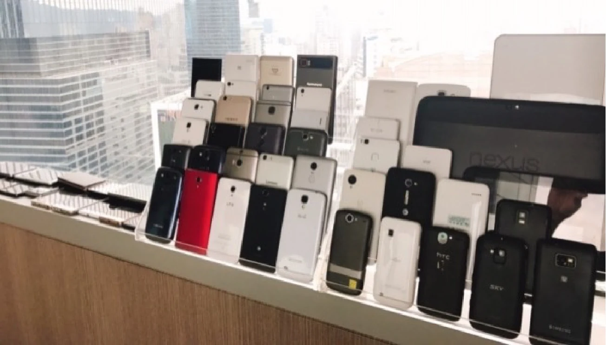
제품을 개발하다 보면 단기적으로 수익이 더 나올 수 있는 방법을 발견할 때가 있다. 허나 제품에 부정적인 영향을 끼친다고 여겨지면 과감히그 길을 포기하였다. 그들은 사람들의 삶에 긍정적인 영향을 미치는 제품을 만드는 일을 지향하기 때문이다. 어쩌면 딜라이트룸이 그동안 외부로부터 투자를 받지 않은 것도 같은 맥락으로 볼 수도 있을 것이다. 사업적인 의사결정보다 제품의 본질을 지키는 것이 무엇보다 중요했기 때문이다. 하지만 불행하게도 기업은 이윤 추구의 목적을 부정할 수는 없기에인앱 광고와 같이 사용자 경험에 일부 부정적일 수 있는 시도를 하지 않을 수가 없는 것이 현실이다. 딜라이트룸은 그 복잡한 균형을 맞추기 위해 지금도 무던히 노력하고 있다.
③ 데이터 주도 (Data-Driven)
알람이라는 본질에 집착에 가깝게 집중하며 더 나은 알람으로 나아가고자 했던 딜라이트룸은 데이터에 항상 진심이었다. 기획을 할 때에도 절대 감에 의존하지 않고 가설이 통계적 유의함을 가지는지 직접 테스트를통해 확인한 뒤에서야 실제 업데이트에 적용하였다. 이러한 분석과 해석의 과정은 딜라이트룸의 일상에서 무한히 반복되고 있다. 대표적으로 A/ B 테스팅과 주간 데이터 분석 및 세미나인 WDAS(Weekly Data Analysis & Seminar)를 통해 이루어지고 있다.
딜라이트룸이 진행한 수많은 A/B 테스팅 중에서도 가장 인상 깊었던것은 전환 문구에 대한 실험이었다. 이 실험은 Alarmy에서 진행한 보상형 광고에 대한 것이었는데, 추천 앱 중 한 가지를 설치하면 프로 버전으로 무료 업그레이드를 30일 동안 제공하는 방식이었다. [그림 36]
< 그림 36. 실제 보상형 광고의 A/B 테스팅 (신재명 대표 개인 블로그, 2018) >
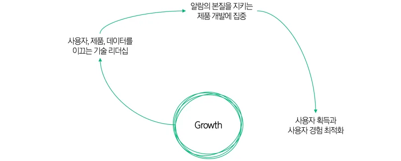
‘30일보다 보상이 늘어나면 추천 앱을 더 많이 받지 않을까’라는 가설을 세우게 되었고 이를 기반으로 보상일을 변경하는 A/B 테스팅을 진행하였다. 결과는 기존 30일 보상일 때는 6%의 사용자가 추천 앱을 설치하였는데, 60일 보상에서는 무려 14%까지 증가하였다. 하지만 100일 보상에서는 오히려 10%로 나와 60일 보상에 비해 낮은 결과가 나왔다. 결론적으로 60일 보상이 가장 좋은 제안이라는 인사이트를 얻을 수 있었던것이다. 단순히 숫자 변경 하나만으로 전환율을 2배 이상으로 증가시킬수 있었던 모범적인 사례였다.
3.2.4 리뷰 데이터 기반 락인 효과 분석
딜라이트룸은 2016년부터 2018년까지 광고 최적화뿐만 아니라 사용자, 제품, 데이터 중심의 기술 리더십 덕분에 비즈니스 모델은 굉장히 최적화된 상태로 발전할 수 있었다. 이러한 과정 속에서 Alarmy는 락인 효과를형성하였다고 가정하였고, 이것이 참이라면 락인 효과가 성장 가속화에상당한 기여를 했을 것이라고 판단하였다. 이를 검증하기 위해 필요한 가설 수립과 분석 방법을 제시하고 데이터 수집 및 분석을 실행하여 관련인사이트를 도출하려 한다.
① 가설 수립 및 분석 방법
Alarmy와 사용자가 기능적 관계 및 신뢰 기반 관계로 묶여짐과 동시에 사용자가 타사 알람 앱으로 이동 시 감수해야 하는 전환 비용이 점점 커지고 있다는 것을 가설로 정하였다. 해당 가설을 검증하기 위해 구글 플레이에서 2016년 1월부터 2018년 12월까지 영어로 작성된 리뷰 데이터를 추출, 수집 및 분석하도록 한다.
② 분석 대상 그룹 선정
Alarmy를 포함하여 2개 알람 앱을 추가하여 분석 대상 그룹으로 선정하고자 한다. 리뷰 데이터 수집이 가능하려면 2024년 11월 현재도 존재하는 알람 앱이어야 하며, 분석 대상 기간인 2016년부터 2018년에도 존재했던 앱이어야 한다. 따라서 현재 구글 플레이에서 ‘알람(Alarm)'을 검색하였을 때 최상위에 노출되는 서드파티 알람 앱들을 조사하였다. 그중에서 AVG Labs의 Alarm Clock Xtreme & Timer와 Moula Software사의 Simple Alarm Clock이 각각 2010년, 2011년에 출시되었으므로 상기 조건에 부합하여 분석 대상 그룹으로 선정하였다. [표 11]
< 표 11. 리뷰 데이터 분석 대상 그룹 개요 (Google Play, 2024) (본인 재가공) >
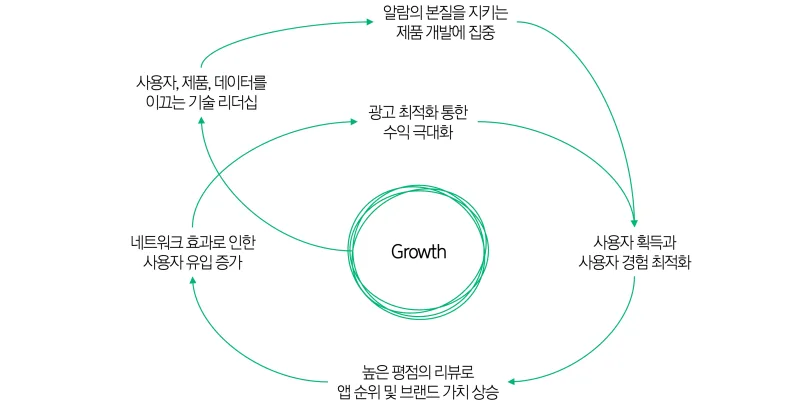
③ 데이터 수집 및 분석, 그리고 락인 효과 검증
분석 대상 그룹으로 선정한 Alarmy를 포함한 총 3개의 알람 앱에 대하여 2016년 1월부터 2018년 12월까지의 구글 플레이의 리뷰 데이터를 Python 3에서 google_play_scraper 패키지를 활용하여 추출하였다. 3개앱 모두 전 세계를 대상으로 서비스되고 있는 점을 감안하여 영어로 작성된 리뷰 데이터만 처리하여 분석하였으며 리뷰수, 답변수, 답변율, 평균리뷰 단어수, 평균 답변 단어수, 평균 답변 소요 시간 등 총 6가지 항목으로 정리하였다. 여기서 ‘답변’은 사용자가 작성한 리뷰에 대하여 개발사가 댓글로 답한 것으로 정의한다. [표 12]
< 표 12. 2016년부터 2018년까지 구글 플레이 영문 리뷰 데이터 분석 (본인 작성) >
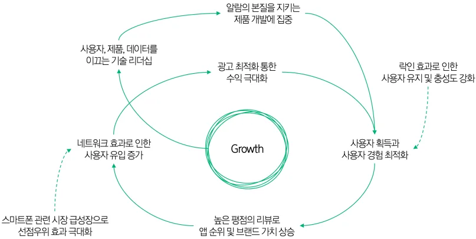
리뷰수는 Alarmy가 약 20만 개로 Alarm Clock Xtreme & Timer보다약 2배 가까이 압도적으로 높았다. 그럼에도 불구하고 답변율도 Alarmy 가 10.60%로 가장 높았는데, Alarm Clock Xtreme & Timer와 약 2%p밖에 차이가 나지 않은 것 같지만 리뷰수를 고려하면 굉장히 큰 격차라고볼 수 있으며, 이는 같은 기간 동안 Alarmy가 약 11,300개의 답변을 더많이 작성한 셈이 된다. Alarmy가 사용자와의 관계를 얼마나 중요하게생각했는지 알 수 있는 대목이며, 사용자와 신뢰 기반 관계로 발전할 수있었던 노하우라고도 볼 수 있다.
고객 만족을 위해 앱 마켓플레이스의 리뷰를 관리할 때는 주로 칭찬, 감사보다는 불편, 불만의 내용에 더욱 신경을 많이 써야 한다. 그래서 대부분 앱들은 5점짜리 리뷰보다는 1점짜리 리뷰에 정성을 쏟는다. 따라서그 답변의 구체성을 가늠하고 답변의 품질을 가르는 척도를 평균 답변단어수로 본 것이다. 해당 지표도 Alarmy가 5.19개로 3개 앱 중 가장 높았다. Simple Alarm Clock의 경우에는 1.13개로 가장 낮았는데, 정성적으로 분석해 본 결과 대부분의 답변이 기계적으로 작성된 경우가 많았다.
한편, 평균 답변 소요 시간은 오히려 Alarm Clock Xtreme & Timer가 70시간으로 가장 빨랐고 Alarmy의 경우엔 155시간에 그치는 것으로 나타났다. 이는 같은 기간 동안 Alarmy에 작성되는 리뷰수가 2배 이상 많았기 때문에 그 처리에 있어 시간이 2배로 들기에 속도도 그만큼 늦어진걸로 해석할 수 있었다.
결과적으로 리뷰 데이터 분석 결과, Alarmy는 매우 높은 리뷰수에도 불구하고 가장 높은 답변율과 가장 정성스러운 답변을 남긴 것으로 확인되었다. 이는 사용자의 충성도를 높이는 효과가 있었다고 볼 수 있다.
< 표 13. 구글 플레이 Alarmy 주요 리뷰 (Google Play, 2024) (본인 재가공) >
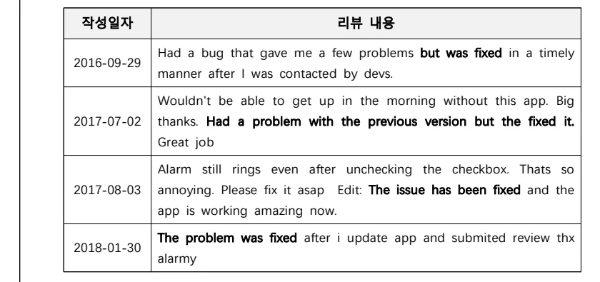
추가적으로 Alarmy 리뷰 데이터의 정성적 분석에서 자주 발견할 수 있는 대화는 사용자에게 문제가 생겼다가, 결국 해결되어 만족한다는 메시지이다. 이러한 요소는 사용자와 앱 사이의 기능적 관계를 강화되고 있는신호로 해석될 수 있다. [표 13]
이번 분석으로 Alarmy가 사용자와의 신뢰 및 기능적 관계를 형성하고사용자 충성도를 확보하여 락인 효과로 나타난 것을 검증하였고, 이것이성장 가속화에 기여하였다는 새로운 가설로 연결될 수 있게 되었다.
3.2.5 Alarmy의 성장을 가속시키는 플라이휠 효과
Alarmy가 최적화된 비즈니스 모델을 바탕으로 2016년부터 2018년까지어떻게 성장이 가속화되었는지 플라이휠 효과(Flywheel Effect)를 기반으로모델링하여 설명하고자 한다. 또한 앞서 연구된 내용들을 포함하며 선점우위 효과의 극대화와 락인 효과는 플라이휠 효과에 어떻게 영향을 끼치는지도 확인해보고자 한다.
① 플라이휠 효과 1단계 : 성장 동력 (Growth Drivers)
처음 단계에서는 어떤 활동들이 주요 성장 동력인지를 정리하고자 한
다. 딜라이트룸에서 가장 중요하게 여기는 것은 어떤 유혹에도 흔들리지
않고 변하지 않는 DNA 그 자체라고 할 수 있다. 그것은 사용자 중심, 제품 지향, 데이터 주도로 정의되어 있으며 기술 리더십으로서 전체 구성원에 길러지며 함양되고 있다. 이를 바탕으로 알람의 본질을 지키는 제품개발에만 온전히 집중할 수 있는 것이다. 그렇게 개발된 제품은 잠재적인사용자의 문제 인식과 문제 정의에 수월히 진입할 수 있게 하며 사용자획득으로 이어지게 된다. 또한 사용자 경험의 최적화는 획득된 사용자의 문제해결을 도울 뿐만 아니라 만족도 이끌어낼 수 있다. [그림 37]
< 그림 37. Alarmy의 성장 가속화를 만드는 플라이휠 효과 ① (본인 작성) >
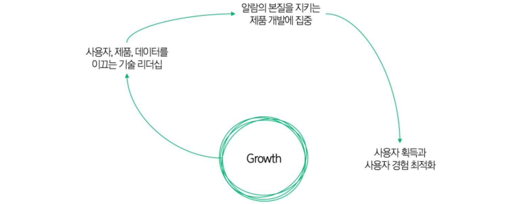
여기서 성장 동력은 기술 리더십과 알람의 본질을 지키는 제품 개발이라고 정의할 수 있다. 이는 딜라이트룸이 Alarmy를 성장시키기 위해서가장 집중하는 핵심활동이라 평가되며 외부로 알려진 딜라이트룸의 문화와 그들의 정체성과도 밀접하게 연결되어 있다.
② 플라이휠 효과 2단계 : 플라이휠 모멘텀 (Flywheel Momentum) 플라이휠의 외부를 따라 계속 순환되는 부분은 모멘텀(Momentum)이라칭한다. 성장 동력이 모멘텀에 닿는 첫 번째 요소가 사용자 획득과 사용자 경험 최적화인 셈이다. 그리고 그 결과로서 유입된 사용자가 제품에만족하여 높은 평점의 리뷰를 남기게 된다면 앱 마켓플레이스에서의 순위와 브랜드 가치가 상승할 것이다. 구글 플레이 또는 애플 앱스토에서의높은 순위와 기존 사용자들의 입소문은 네트워크 효과를 형성하여 유기적인(organic) 사용자 유입을 만들어낸다. [그림 38] 즉, 광고/마케팅 비용을 들이지 않고도 사용자 유입을 만들 수 있다는 뜻이다.
2016년부터 2018년 사이 딜라이트룸은 광고 최적화에 관한 전문성을점점 축적해 나갔다. 꾸준히 늘어나는 사용자는 고효율의 광고 시스템의컨베이어 벨트 위에 차례대로 올라섰다. 그 덕분에 수익은 극대화되었고풍족해진 재정 상황은 사용자 획득과 사용자 경험 최적화에 재투자될 수있었다. [그림 38]
< 그림 38. Alarmy의 성장 가속화를 만드는 플라이휠 효과 ② (본인 작성) >
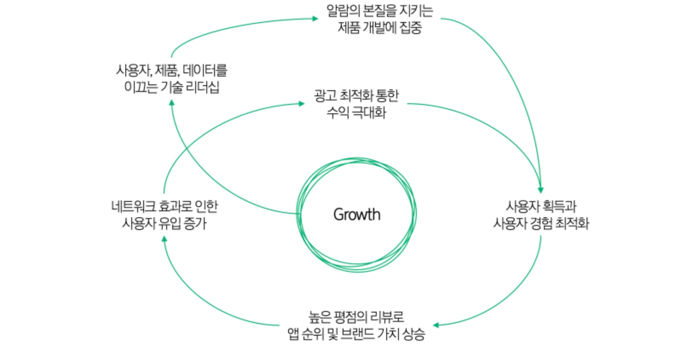
성장 동력과 모멘텀이 모두 마련된 플라이휠은 Alarmy와 딜라이트룸을지속적으로 성장시키기에 충분한 구조로 발전하였다. 그리고 성장의 관성은 이미 강해져 가속화되고 있었다. 그들이 열심히 개발한 앱이 사용자를만족시키고 좋은 평가로 이어져 새로운 고객을 유입시키고 그 결과로 매출이 지속적으로 증가하는 이상적인 선순환 구조가 마련된 것이다.
③ 플라이휠 효과 3단계 : 성장 촉진 요인 (Growth Catalyst) 대부분의 플라이휠 효과는 성장 동력과 플라이휠 모멘텀의 구조로 완성되어 설명된다. 하지만 Alarmy의 플라이휠에는 앞서 검증한 선점우위효과의 극대화와 락인 효과도 추가적으로 반영하여야 한다. 그래야만 그것이 Alarmy와 딜라이트룸의 성장 가속화를 둘러싼 또다른 요인이 존재하고 있었다는 점을 설명할 수 있기 때문이다. 두 가지 요인은 성장 동력과 플라이휠 모멘텀 외의 성장 촉진 요인(Growth Catalyst)으로 정의하도록 한다. 하지만 두 가지 요인에는 차이점이 있다. 선점우위 효과의 극대화는 거시적인 시장의 변화라 외부적인 요인이라 해석할 수 있지만, 락인효과는 스스로 형성한 내부적인 요인에 가깝다고 볼 수 있다.
이러한 점에서 스마트폰 관련 시장의 급성장은 갑자기 사용자가 많아지며 앱 마켓플레이스도 덩달아 커져 자연스럽게 선발주자의 이점을 지닌 Alarmy의 네트워크 효과를 더욱 증가시키는 결과를 낳았다. 따라서 [그림 39]의 좌측 하단에 이를 표시하여 플라이휠 모멘텀의 ‘네트워크 효과로 인한 사용자 유입 증가’에 점선으로 연결하였다.
< 그림 39. Alarmy의 성장 가속화를 만드는 플라이휠 효과 ③ (본인 작성) >
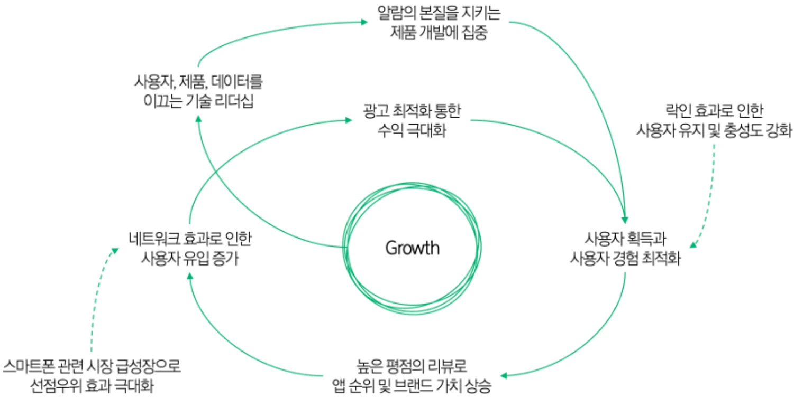
그리고 락인 효과는 사용자 충성도를 점점 증가시키고 이탈을 감소하게 하는 것이 결국 사용자 획득 성과에도 긍정적인 역할을 하는 것으로평가된다. 그러므로 [그림 39]의 우측 상단에 이를 표시하여 플라이휠 모멘텀의 ‘사용자 획득과 사용자 경험 최적화’에 점선으로 연결하였다.
④ 플라이휠이 만든 성장 가속화의 결실
이번 장에서는 비즈니스 모델 최적화 및 성장 가속화를 분석하기 위해 2016년부터 2018년까지 총 3년의 기록을 중점적으로 조사하며 심층적인연구를 진행하였다. Alarmy의 플라이휠은 매우 이상적이면서도 균형감이있는 선순환 구조라고 평가할 수 있다. 동시에 거시적인 시장 상황과 내부적인 노력으로 만든 상황까지 성장을 더욱 촉진시키는 시너지로 작동하여 플라이휠이 엄청나게 빠르게 회전할 수 있었다. 이 시기에 딜라이트룸이 미래의 토대를 잘 닦아놓은 덕분에 가속화된 성장은 멈출 줄을 모르고 무한히 달려나갔다. 서론에서 정리한 딜라이트룸 타임라인에서 창업기(2012), 개척기(2013-2015), 성장기(2016-2018), 도약기(2019-2022), 확장기(2023)로 구분하였는데, 성장기에 만든 이 플라이휠은 2022년까지 굴러가 매출액 192억원, 영업이익 110억원, 영업이익률 57%를 달성하게 만들었고 성장기가 시작된 2016년을 기준으로 하면 6년 동안 무려 매출액은 2,567%, 영업이익은 5,400% 성장하였다. [표 12]
< 표 12. 2012~2022 딜라이트룸 연도별 실적 (본인 재가공) >
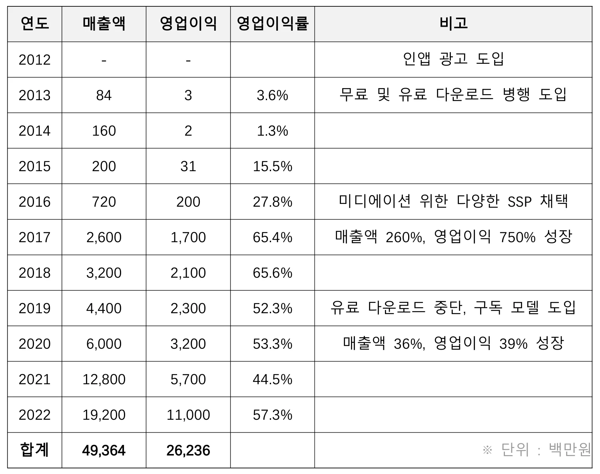
3.3 지속 가능한 성장을 만드는 핵심역량
지금까지 딜라이트룸의 Alarmy가 2012년 처음 출시된 이후로 2018년까지 어떻게 성장하였는지 분석하였고, 성장기에 갖춘 플라이휠이 2019년부터의 도약기에 얼마나 큰 영향을 주었는지도 실적으로 간단하게 살펴보았다. 이번 장에서는 딜라이트룸이 Alarmy를 통해 확보한 핵심역량을 분석하여 확인하고자 한다. 이를 위해 2019년부터 2022년까지의 도약기와 2023 년의 확장기를 중점적으로 분석하였다. 도약기에 들어서 가장 크게 변화한점은 2019년부터 프리미엄 버전의 유료 앱을 없애고 구독 모델을 새롭게도입하였다는 점을 참고하길 바란다.
3.3.1 성공적인 사용자 경험 제공 통한 고객 가치 창출
딜라이트룸이 고객에 가치를 전달하기 위해 업의 본질을 어떻게 정의하는지, 그리고 플라이휠 모멘텀의 첫 번째 요소인 사용자 경험 최적화는어떻게 접근하는지를 분석하고자 한다. 다만 앞서 딜라이트룸의 플라이휠효과를 연구하는 과정에서 그들의 DNA에 대한 내용은 이미 다뤘었다. 고객 중심, 제품 지향, 데이터 주도 등 해당 부분은 고객 가치 분석에도 충분히 설명되기에 적합하지만 중복 설명이 될 수 있기에 본 장에서는 언급하지 않기로 한다.
① 완벽한 아침을 위한 사용자 중심 경험 제공
기존 알람의 책임 범위는 일어나는 순간에 집중되어 있지만 Alarmy는 잠들기 전부터 잠에서 깬 직후까지 책임의 범위를 보다 넓고 깊게 설정하여 관리하고 있다. 그래서 현재의 Alarmy는 사용자가 잠들기 전 취침을 유도하여 숙면을 취하게 한다. 이후 설정된 시간에 알람이 울리고 이를 해제하기 위한 기상 미션이 주어진다. 잠에서 깨고나면 아침을 채우는 정보를 제공하고 기상 체크까지 한다. 이를 통해 성공적인 아침이라는 가 치를 전달하고 있다.
딜라이트룸의 고도화된 데이터 분석 역량은 사용자가 Alarmy를 사용하면 할수록 성공적인 아침을 완성할 수 있도록 빠르게 발전하고 있다. 이를 바탕으로 설계된 비즈니스 모델은 Alarmy가 성공적인 아침이라는 가 치를 사용자에 전달하고, 사용자는 Alarmy에 광고 및 구독 수익을 제공하는 방식이다. [그림 40] 사용자의 페르소나(Persona)는 알람을 써도 항상늦잠을 자는 사람, 매일 규칙적인 생활을 원하는 사람, 하루를 활기차게보내고 싶은 사람 등이다. 그런 사람들에게 Alarmy는 사운드 파워업, 미션 알람, 다시 잠들기 방지, 수면 사운드, 취침 리마인더, 기상&수면 리포트 등 다양한 기능을 제공한다.
< 그림 40. Alarmy 비즈니스 모델 (Delightroom Culture Deck, 2022) (본인 재가공) >
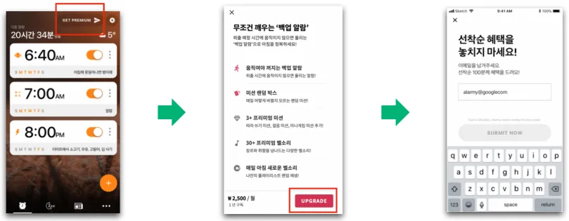
Alarmy는 한 달 평균 450만 명의 사용자가 이용하고 있다. 수많은 사람들이 이 앱을 통해 하루를 마무리 하고, 다시 새로운 아침을 맞이 한다. 그리고 어느 누군가에게는 없어서는 안 될 소중한 존재가 되어가고있다. 그런 사람들은 Alarmy에 대한 무한한 찬사를 보내며 다른 이들에게도 자신이 누렸던 혜택이 많은 사람에게 공유될 수 있도록 적극적으로전파한다. [그림 41]은 딜라이트룸의 컬처덱에 담긴 'Larmy'가 남긴 추천사들이다. 여기서 Larmy는 Alarmy의 사용자를 지칭하는 말이다.
< 그림 41. Alarmy 추천사 (Delightroom Culture Deck, 2022) (본인 재가공) >
딜라이트룸이 추구하는 업의 본질은 “Wake people up, fully and com pletely"라는 그들의 미션과도 일치한다. 딜라이트룸 공식 블로그에서는고객 가치를 실현하기 위하여 사용자 50%를 만족시키는 것보다 1%를감동시키는 것이 더욱 중요하다고 이야기하고 있었다.
② 1%의 핵심 사용자를 위한 사용자 경험 최적화
딜라이트룸은 Alarmy를 통해 수집한 빅데이터를 매주 분석하여 얻은인사이트를 기반으로 사용자 경험을 최적화하고 성공적인 아침을 맞이하는 가치를 지속적으로 제공한다. 다음 사례는 딜라이트룸 블로그를 통해발굴였으며 최초 앱 설치 후 24시간 만에 다시 앱으로 돌아오는 사용자비율인 ‘Day 1 Retention'를 개선한 사례이다. [그림 42]
< 그림 42. Alarmy 온보딩 Before & After (딜라이트룸 블로그, 2024) >
Alarmy에서는 사용자의 Day 1 Retention을 가장 주목하고 있다고 한다. 사용자가 ‘와우 모먼트(wow moment)’를 느끼기 위해서는 미션 알람을 사용해보는 것이 중요하다. 기존에는 온보딩을 위해 앱을 단순히 설명하는 슬라이드 이미지를 차례로 넘기는 방식이었는데, 앱을 실제로 사용하는 과정을 온보딩에 넣으니 Day 1 Retention이 15~20% 상승하는 것을 확인할 수 있었다고 한다. 그리고 해당 경향은 앱 설치 7일차, 14일차까지 유지되었고, 이는 앱 사용성 개선과 동시에 수익성까지 확대한 사례라고 밝혔다.
또 다른 사례로는 폰 전원끄기 방지 기능과 앱 삭제 방지 기능 도입이다. 대부분의 사용자는 알람 소리를 듣고 잘 일어나겠지만 소수의 사용자들은 자신도 모르게 스마트폰 전원을 끄고 다시 잠에 드는 경우가 더러있었다고 한다. 게다가 알람을 해제하기 힘들어서 그냥 앱을 지우고 알람을 끄는 경우도 있었다고 한다. 황당한 것은 이들이 앱 마켓플레이스에알람이 울릴 때 휴대폰의 전원을 끌 수 없게, 앱을 삭제할 수 없게 해달라고 요청한다는 것이다. 즉, 사용자가 자신의 의지를 스스로 신뢰하지못하니 앱의 기능으로 구현해 달라는 것이다. [그림 43]
< 그림 43. 폰 전원끄기 및 앱 삭제 방지 기능 (딜라이트룸 블로그, 2023) >
위의 2가지 기능들은 모두에게 필요한 것은 아니지만 1%의 핵심 사용자가 필요로 하기 때문에 만들었다고 한다. 그것이 왜 중요하나면 이 사용자들이야 말로 아침에 일어나는데 어려움을 겪는 1%이기 때문이라고한다. 그리고 딜라이트룸은 그런 문제를 해결하기 위해 Alarmy라는 제품을 만들고 있다고 설명한다.
3.3.2 데이터 분석 기술 기반의 경쟁우위 확보
① 광고 매출 극대화 및 구독 매출 추가로 재무적 성장 고도화
딜라이트룸은 2016년부터 뛰어난 데이터 분석 기술과 역량을 바탕으로광고 최적화를 통한 건실한 매출 성장을 이뤄내왔다. 또한 2019년에는알람 앱의 패러다임을 완전히 바꾸는 접근을 시도하였다. 기존에 유료로판매되고 있었던 광고 없는 프로 버전 앱을 앱 마켓플레이스에서 내렸다.
대신 기존 프로 앱에서 제공되는 기능들을 구독 모델로 제공하는 것을시도하기로 결정하였다. 구독이라는 비즈니스 모델의 가능성을 확인하기위해 초기 실험을 진행하였는데, 처음 세운 가설은 사용자의 문제를 확실하게 풀어줄 수 있는 패키지를 제공하면 구독 모델도 작동한다는 것이었다. Alarmy 첫 화면에 ‘프리미엄 업그레이드’ 버튼을 추가하고 이를 희망하는 사용자의 이메일 주소를 수집하여 실제 수요를 먼저 파악하였다. 또한 어떤 프리미엄 패키지를 원하는지 함께 알아보기 위해 6가지 종류의패키지로 A/B 테스팅을 병행하였다. [그림 44]
< 그림 44. 초기 구독 비즈니스 모델 테스트 과정 (딜라이트룸 블로그, 2022) >
실험 종료 후에 구매의 마지막 단계이자 퍼널(Funnel)이라고 할 수 있는 이메일 입력 기준으로 구매 전환율은 2~5%로 나타났다. 이후 이메일을 남겨주신 사용자들을 대상으로 설문조사와 인터뷰를 진행하였고, 5%보다 높은 전환율의 패키지를 결국 찾게 되어 실제 구독 모델을 도입하였다. 이후 구독 모델의 가격은 여러 실험을 통해 결정되었고 2024년 11 월 기준 애플 앱스토어에서 ‘알라미 프리미엄 스탠다드’는 월 6,900원에제공되며 연간 구독 시 30% 할인된 58,000원에 제공되고 있다.
Alarmy라는 하나의 앱에서 광고 매출과 구독 매출은 각자 도생하며 눈부신 성장을 기록하고 있다. 구독 매출에 대한 정확한 자료는 확보할 수없었기에 딜라이트룸에 각 매출의 내역을 직접 요청하여 전달 받았다. 해당 자료에 따르면 2019년 딜라이트룸의 매출은 44억원이었으며 98% 이상이 광고로 발생한 매출이었다. 구독 모델의 매출은 2020년부터 본격적으로 발생한 것으로 확인되었다. 하지만 2020년 전체 매출은 60억원으로성장하였지만 광고 매출은 33억원으로 오히려 전년보다 25% 감소한 것으로 나타났다. 이는 하나의 앱에서 2가지 수익 모델이 서로 경쟁하며매출을 빼앗는 일종의 카니발리제이션(Cannibalization)이 일어났기 때문이다. 그럼에도 불구하고 각 수익 모델은 더욱 고도화되어 이듬해인 2021년 광고 매출은 188% 성장한 95억원, 구독 매출은 22% 성장한 33 억원을 기록하여 총 128억원의 매출을 올리며 그 과도기를 조기에 종식시켰다. 불과 2년 만에 전체 매출이 190% 증가한 결과로 구독 매출 도입은 성공적이었다. 이후로도 성장을 지속하여 2023년에는 광고 매출 146 억원, 구독 매출 73억원으로 총 240억원의 매출을 달성하였다. [그림 45]
< 그림 45. 2020~2023 딜라이트룸 (딜라이트룸) (본인 재가공) >
주목할 점은 2023년 기준으로 과거 3년간 DAU(Daily Active Users, 일간활성사용자수)는 20% 증가한 반면 광고 매출은 10배에 가까운 224%증가하였다. 같은 사용자수 대비 더 높은 매출을 낼 수 있는 것은 데이터분석 역량 덕분이며 딜라이트룸의 지닌 경쟁우위라고 할 수 있다.
② 데이터 분석 기술과 역량이 만드는 격차
광고와 구독 매출의 견실한 성장은 자연스럽게 재무적인 지표에서 경쟁사를 압도하는 결과로 이어졌다. 실제 딜라이트룸의 데이터 분석 기술과 역량이 얼마나 뛰어난지 확인하려면 체급이 비슷한 경쟁사와 대조 분석하는 것이 필요하다. 딜라이트룸의 경쟁사 중에 규모가 비슷한 곳으로는 수면 추적 및 분석 스타트업 Sleep Cycle이 있다. Sleep Cycle은 2009 년 스웨덴에 설립되어 2021년 나스닥 스톡홀름에 상장하였다. 우선 딜라이트룸과 Sleep Cycle의 최근 3년간 매출액과 영업이익을 비교하고자 한다. Sleep Cycle의 재무 정보는 Investing.com을 통해 확인하였고 크로나- 원화 환율은 1:125를 적용하여 원화를 병기하였다. [그림 46]
< 그림 46. 2021~2023 딜라이트룸과 Sleep Cycle 매출액 및 영업이익 (본인 작성) >
Sleep Cycle은 이미 2021년에 매출액 200억원 규모를 먼저 돌파하였고딜라이트룸도 2023년에 뒤따라 돌파하였다. 2023년까지 매출액은 딜라이트룸이 상대적으로 낮은 상황이지만 영업이익 관점에서는 딜라이트룸이 2021년부터 오히려 더 높은 상황이다. 이는 최근 3년간 평균 영업이익률이 22%인 Sleep Cycle과 비교하여 딜라이트룸은 56%를 기록하여 2배이상 높다는 것으로 확인할 수 있다. 지금 추세라면 2024~2025년 사이매출액 또한 딜라이트룸이 추월할 것으로 예상된다. 목적과 기능은 유사한 알람 앱이더라도 데이터 분석 역량이 단기간에 극복할 수 없는 격차로서 존재한다는 것으로 해석되었다. 앞으로 2배 가까운 영업이익을 활용해 공격적인 투자를 이어간다면 결코 좁힐 수 없는 격차가 될 것이다.
추가적인 분석을 위하여 구글 플레이에서 알람 앱 검색을 진행하였다.
삼성, 구글이 만든 알람 앱을 제외한 서드파티 앱 중에 노출 상위 3개는 Alarmy, Alarm Clock Xtrem & Timer, Simple Alarm Clock으로 나타났다. 여기에 앞서 비교한 Sleep Cycle까지 추가하여 앱 분석 서비스인 모바일인덱스를 통해 2024년 11월 14일 기준 해당 알람 앱들의 점유율, 리뷰, 평점 등을 조사하였다. 점유율의 경우에는 삼성 알람 앱은 사용자수에서 제외하고 상위 22개 앱의 사용자수를 바탕으로 직접 계산하였다. [표 13]
< 표 13. 주요 알람 앱 점유율, 리뷰수, 평점 (모바일인덱스, 2024) (본인 재가공) >
해당 그룹에서 Alarmy의 점유율은 무려 49.31%로 압도적인 1위로 확인되었고 평점도 4.7점으로 가장 높았다. 또한 리뷰수도 약 175만 건으로두 번째로 높은 Alarm Clock Xtreme & Timer와 비교하여 60만 건 이상차이가 날 정도로 격차가 큰 것으로 파악되었다. 이렇듯 시중에 무수히많은 알람 앱이 시장의 선택을 기다리고 있지만 Alarmy가 형성한 거대한진입 장벽이 얼마나 높은지 체감할 수 있다. 게다가 데이터 분석 기술이만드는 경쟁우위로 인하여 추격할 수 있는 기회가 좀처럼 보이지 않는다.
3.3.3 전략적 투자 및 사업 다각화 통한 확장
① 데이터 분석 기술의 확장 위한 전략적 투자
도약기를 거치며 딜라이트룸의 정체성은 점차 넓어져 갔다. Alarmy의 역할을 아침에만 국한시키는 것이 아니라 잠에 들기 전부터 잠을 완전히깨고 난 이후까지로 범위를 확장시켰다. 그러므로 자연스럽게 그 관심은 웰니스(wellness)로 확장되게 되었다. 또한 데이터 분석 기술을 바탕으로이룬 매출의 고속 성장과 높은 영업이익률은 재무적 구조도 탄탄하게 만들어주었고 이는 새로운 기회로 나아갈 수 있는 든든한 밑바탕이 되었다.
딜라이트룸은 자신들의 데이터 분석 기술의 확장을 위해 관련 스타트업에 전략적 투자(SI, Strategic Investment)를 단행하기 시작하였다. 또한웰니스 관련 스타트업에도 꾸준히 투자하여 외연을 확장하였다. 외부에공개된 정보에 따르면 2021년부터 총 7건의 투자 또는 인수를 진행한 것으로 확인된다. [표 14]
< 표 14. 딜라이트룸이 투자한 스타트업 (본인 작성) >
포트폴리오로 확보한 기업을 살펴보면 세부 분야가 다양한 것을 확인할 수 있다. 유일하게 투자가 아닌 자회사로 인수한 사례가 ‘마이루틴’인데, 해당 앱은 사용자가 원하는 하루의 루틴을 직접 관리하고 실천할 수있게 도와주는 서비스이다. Alarmy는 밤부터 아침 사이를 책임지고 있지만, 마이루틴은 Alarmy가 닿지 못하는 아침부터 밤 사이의 일상을 책임지고 있다. 이를 통해 사람들의 성공적인 하루를 만들려고 하는 딜라이트룸의 전략에 부합하는 인수였다고 결론을 내릴 수 있다.
② DARO 출시로 신사업 진출 및 매출 다각화
딜라이트룸이 보유하고 있는 우수한 데이터 분석 기술은 Alarmy의 성공사례가 확산되며 외부에도 많이 알려지게 되었다. 그래서 비슷한 형태의 서비스를 하고 있는 곳에서 협업 요청이 많이 들어오게 되었고, 딜라이트룸은 이러한 수요가 앞으로도 지속적일 것이라고 판단하였고 자신들의 데이터 분석 기술과 역량을 솔루션으로 담아내 DARO(Delightroom Ad Revenue Optimizer)를 출시하기로 마음 먹었다.
내부 BD(Business Development) Group에서 Alarmy의 광고 수익화 노하우를 기반으로 다른 앱 서비스 기업의 광고 매출을 개선하여 증가시킬수 있는 서비스를 2022년에 비공식 출시하였다. 놀랍게도 단 2명으로 구성된 소규모 조직만으로 2022년 매출 4억원, 2023년 매출 20억원을 달성하였다. 해당 성과를 바탕으로 2023년 12월에 DARO라는 이름으로 공식 출시되며 B2B 광고 수익 고도화 사업으로 진출하였다. 이는 딜라이트룸 창립 이래 처음으로 Alarmy 외 출시한 서비스이기도 하다. [그림 47]
< 그림 47. DARO 출시 안내 배너 (매일경제, 2024) >
DARO는 핵심기능으로 자동화된 수익 최적화 모델, 광고 효율 분석을도와주는 리포팅 대시보드가 있으며 Alarmy에 활용되고 있는 최신 애드테크 기술 기반의 광고 모델, A/B 테스팅에 기반한 수익 최적화 노하우등을 제공한다. 미디에이션(Mediation) 업계에서는 수익 증가율이 20~3 0%만 되어도 높은 수준이지만 DARO는 고객사 평균 수익 증가율 80%를달성하였다. 특히 ‘미세미세’를 운영하는 ‘라이프오버플로우’는 DARO 적용 후 3개월 만에 광고 매출이 115% 증가하였다.
트래픽이 충분히 확보되는 앱 기반의 서비스를 하고 있는 기업이라면딜라이트룸의 광고 수익화 노하우를 그대로 활용할 수 있기 때문에 Alar my가 아닌 타사의 앱이 선점한 다양한 시장에도 진출하여 수익 창출이가능해졌다. 이는 딜라이트룸의 데이터 분석 기술이라는 핵심역량을 활용하여 새로운 사업 영역으로 진출한 사례로서 확장력을 확인할 수 있다.
제4장 결론
4.1 결론 및 시사점
본 연구에서는 딜라이트룸의 역사를 창업기(2012), 개척기(2013~2015), 성장기(2016~2018), 도약기(2019~2022), 확장기(2023)로 분류하여 이를 바탕으로 성공 요인을 분석하였고 다음과 같이 결론을 정리하고자 한다.
Alarmy의 전신인 Sleep If U Can이 초기 시장 진입에 성공할 수 있었던것은 뾰족하게 기획된 MVP와 전략적 마케팅, 그리고 데이터 분석 기반의 Build-Measure-Learn 프로세스가 주효했다. 그리고 무주공산이었던 알람앱 시장에 미션 알람으로 파고 들어가 퍼스트 무버가 되었고 선점우위 효과를 누릴 수 있었다. 게다가 스마트폰 대중화라는 거시적 환경의 변화는 그 효과를 극대화시키며 Alarmy를 시장에 확고히 안착시켰다.
비즈니스 모델을 최적화하고 성장을 가속화할 수 있었던 것은 사용자,제품, 데이터 중심의 기술 리더십의 역할이 가장 컸다. 알람 본질을 지키는 제품 개발에 집중하여 사용자 획득과 사용자 경험 최적화 → 앱 순위및 브랜드 가치 상승 → 네트워크 효과로 인한 사용자 유입 증가 → 광고 최적화 통한 수익 극대화 → 다시 사용자 획득과 사용자 경험 최적화로이어지는 순환을 만들어냈고 이는 Alarmy의 성장을 가속시키는 플라이휠역할을 하였다. 추가로 락인 효과는 사용자 유지에 영향을 주었고, 스마트폰 대중화로 인한 선점우위 효과 극대화는 사용자 유입에 영향을 주며 플라이휠을 더욱 강하게 회전시키며 성장을 가속시켰다.
딜라이트룸의 지속 가능한 성장을 만드는 핵심역량은 기술 리더십과 데이터 분석 기술로부터 나왔다. Alarmy를 통해 만드는 성공적인 사용자 경험은 높은 수준의 고객 가치를 창출하고 있었다. 또한 데이터 분석 기술은 경쟁자보다 더 큰 이익을 만들며 그들이 추격하지 못하게 격차를 벌리는 역할을 하며 경쟁우위의 원천이 되었다. 그리고 DARO의 출시와 관련분야에 대한 전략적 투자는 딜라이트룸의 확장성을 보여주었다.
결론적으로 딜라이트룸의 성공 사례는 스타트업이 단계별로 성장을 이루기 위해 무엇에 집중해야 하는지 명확히 보여주고 있다. 처음부터 끝까지 본질만을 추구하며 흔들림 없이 정진하여 성공에 도달한 이 이야기가대한민국 스타트업 사이에서 오래도록 회자되며 선한 영향을 끼치길 바란다.
4.2 한계점 및 제언
본 사례 연구는 딜라이트룸의 성공 요인을 여러 관점으로 접근하여 분석하였지만 여전히 많은 한계점이 있다. 외부에 공개된 자료를 이용하여 분석하는 경우가 많았는데, 그 중에서도 정보의 원천이 딜라이트룸 그 자체인 경우가 상당히 많았다. 대기업과 달리 자료가 충분하지 않은 스타트업이기 때문에 그러한 자료에 의존할 수밖에 없었다보니 수집한 정보에 대해비판적으로 접근하고 사고하기가 어려웠다. 그리고 딜라이트룸의 창업기부터 확장기까지 타임라인 전체를 조명하여 성공 요인을 분석하려 시도하였는데, 창업기에 가까운 과거일수록 자료를 찾기가 어려워 분석의 질을 충분히 높이지 못한 점이 아쉽다. 아마도 이와 같은 한계로 인하여 사례 연구에서 스타트업이 나오기 어려운 것 같다. 그나마 다행이었던 것은 딜라이트룸에서 적극적으로 자료를 제공해 주고 필요한 인터뷰도 응해주어서본 연구를 성공적으로 마무리 할 수 있었다. 진심으로 감사의 인사를 전하고 싶다. 앞으로도 스타트업과 관련된 사례 연구가 지속적으로 이어질 수있도록 많은 사람들이 관심을 가지고 지켜봐주기를 바란다.
요즘 창업생태계를 바라보면 그야말로 벼랑 끝에 모두 몰려 있는 것만같고 여전히 겨울은 끝나지 않은 것으로 보인다. 적지 않은 스타트업이 자금이 말라 고사하고 있다. 이런 시기일수록 사업의 본질에 더욱 집중하며고객에 전달할 가치에 온 힘을 쏟아야만 한다. 그런 의미에서 딜라이트룸의 성공 사례는 새로운 도전을 앞두고 사업적 영감을 받기에 좋은 원천이될 것이라 기대한다. 대한민국의 창업생태계가 다시금 활력을 되찾을 수있기를 진심으로 염원하며 본 연구를 마친다.
Reference
- [01] 중소벤처기업부. (2021). 한국 창업 생태계의 변화 분석.
- [02] 중소벤처기업부. (2024년 10월 25일). 창업기업 동향. e-나라지표.
- [03] Giardino, C., Wang, X., & Abrahamsson, P. (2014). Why early-st age software startups fail: A behavioral framework. Software bu siness: Towards continuous value delivery (pp. 27–41). Springer. https://doi.org/10.1007/978-3-319-08738-2_3
- [04] Pugsley, B., Sedlacek, P., & Sterk, V. (2017). The Nature of Fir m Growth. Kauffman: Entrepreneurship Scholars Initiatives (To pic). https://doi.org/10.2139/ssrn.3086640.
- [04] Santisteban, J., & Mauricio, D. (2017). Systematic Literature Re view of Critical Success Factors of Information Technology Star tups. Academy of Entrepreneurship Journal, 23, 1.
- [05] Krishna, A., Agrawal, A., & Choudhary, A. (2016). Predicting th e Outcome of Startups: Less Failure, More Success. 2016 IEEE 16th International Conference on Data Mining Workshops (ICDM W), 798-805. https://doi.org/10.1109/ICDMW.2016.0118.
- [06] Baskoro, H., Prabowo, H., Meyliana, M., & Gaol, F. (2022). Pred icting Startup Success, a Literature Review. International Confe rence on Information Science and Technology Innovation (ICoST EC). https://doi.org/10.35842/icostec.v1i1.6.
- [07] 채원영. (2023년 10월 26일). 국내 창업기업 3곳 중 2곳은 5년 안에 폐업. 매일신문. https://n.news.naver.com/mnews/article/088/000084273 2?sid=004
- [09] Ries, E. (2012). 린 스타트업: 지속적 혁신을 실현하는 창업의 과학 (이창수 & 송우일 공역). 인사이트.
- [10] 백욱인. (2014년 2월 14일). (6) 인터넷의 역사(1990 ~ 현재). 경향신문. https://www.khan.co.kr/feature_story/article/201402142117075
- [11] 한국일보. (2019년 3월 28일). <트렌드> 벤처기업의 역사 ‘그것이 알고 싶다’. 한국일보. https://www.hankookilbo.com/News/Read/20190327
- [12] 알럽여수. (2013년 5월 29일). [sleep if U can] (잘 수 있으면 자봐!!). 네이버 블로그. https://blog.naver.com/iloveyeosu7/60192953954
- [13] Shimpi, A. L. (2007년 7월 2일). Apple's iPhone: The Future is H ere. ANANDTECH. https://www.anandtech.com/show/2265/23
- [14] Cheng, J. (2009년 1월 17일). iPhone App Store: half a billion ser ved. ars TECHNICA. https://arstechnica.com/gadgets/2009/01/ip hone-app-store-half-a-billion-served/
- [15] Santos, E. (2010년 11월 2일). How to get around the iPhone Alar m bug. sotfonic. https://en.softonic.com/articles/alternatives-to- the-iphone-alarm-bug
- [16] Broida, R. (2014년 9월 19일). Four awesome alarm clock apps. C NET. https://www.cnet.com/tech/mobile/four-awesome-alarm-cl ock-apps/
- [17] Sumitra. (2012년 4월 13일). Ramos, the World's Most Annoying A larm Clock. ODDITYCENTRAL. https://www.odditycentral.com/n ews/ramos-the-worlds-most-annoying-alarm-clock.html
- [18] Sammut, P. (2013년 10월 19일). Ramos alarm clock. Kickstarter. https://www.kickstarter.com/projects/2074185253/ramos-alarm- clock
- [19] 문보경. (2012년 11월 12일). 한국판 스티브 잡스 키우기. 주간동아. https: //weekly.donga.com/economy/article/all/11/94914/1
- [20] SW마에스트로. (2015년 11월 27일). 당신의 아침을 책임져 드립니다! 제2 기 ‘신재명’ 수료생 인터뷰. 네이버 블로그. https://m.blog.naver.com/sw _maestro/220551819687
- [21] Kooser, A. (2014년 5월 29일). Alarm app makes you get up, take photos, stay awake. CNET. https://www.cnet.com/culture/alarm- app-makes-you-get-up-take-photos-stay-awake/
- [22] Gilbert, J. (2012년 8월 28일). Sleep If U Can: Android Alarm Clo ck App Won't Stop Ringing Until You Take A Very Specific Pho to. HUFFPOST. https://www.huffpost.com/entry/sleep-if-u-can -android-alarm-clock-photo_n_1836068
- [23] 전하나. (2012년 9월 2일). 무조건 깰 수밖에 없는 알람 앱 화제. ZDNET Korea. https://zdnet.co.kr/view/?no=20120902102215
- [24] Klosowski, T. (2013년 1월 29일). The Most Sadistic Apps That F orce You to Get Stuff Done. LIFEHACKER. https://lifehacker.co m/the-most-sadistic-apps-that-force-you-to-get-stuff-done-59
- [25] 전자신문 etnews. (2013년 3월 4일). 잠꾸러기를 위한 최고의 스마트앱은? [Video]. YouTube. https://www.youtube.com/watch?app=desktop &v=7YBVmq-V59s
- [26] ねとらぼ. (2013년 4월 2일). 寝られるものなら寝てみろ！ 特定の場所に行 かないと止められない目覚ましアプリ. ねとらぼ. https://nlab.itmedia.co.j p/nl/articles/1304/02/news074.html#google_vignette
- [27] AppBank.netチャンネル. (2013년 5월 13일). Sleep If U Can / iPhon eアプリ [Video]. YouTube. https://www.youtube.com/watch?v=MN bmayIqHNY
- [28] 조성진. (2013년 5월 23일). 세상에서 가장 강력한 ‘악마의 알람 앱’ 화제. 머니투데이. https://news.mt.co.kr/mtview.php?no=2013052311004
- [29] Speedline Tech. (2013년 7월 6일). Sleep If U Can - App Review [Video]. YouTube. https://www.youtube.com/watch?v=Xn-I1_YSt cM
- [30] 신재명. (2023년 11월 30일). SLEEP IF U CAN (ALARM) [강의 자료]. 한국공개소프트웨어협회.
- [31] 태하지. (2012년 9월 10일). 알람류 甲. 오늘의유머. https://www.todayh umor.co.kr/board/view.php?table=bestofbest&no=81801
- [32] Google Play. (n.d.). Alarmy - Alarm Clock & Sleep [리뷰 데이터]. Retrieved November 14, 2024, from https://play.google.com/stor e/apps/details?id=droom.sleepIfUCan&hl=en
- [33] Analysis Group. (2022년 4월 7일). Apple App Store billings from 2009 to 2021 (in billion U.S. dollars) [Graph]. In Statista. Retri eved November 14, 2024, from https://www-statista-com.libra.k aist.ac.kr/statistics/1302222/apple-app-store-billings/
- [34] Ranger, S. (2015년 1월 16일). iOS versus Android. Apple App Sto re versus Google Play: Here comes the next battle in the app w ars. ZDNET. https://www.zdnet.com/article/ios-versus-android- apple-app-store-versus-google-play-here-comes-the-next-batt le-in-the-app-wars/
- [35] 앱스토리. (2013년 9월 3일). Sleep if U can - 잘테면 자봐! 독특한 알람 앱. 앱스토리. https://news.appstory.co.kr/iphone4554
- [36] 신재명. (2017년 8월 28일). 알라미? 그게 뭐하는 앱인데?. Medium. http s://medium.com/delightroom/알라미-그게-뭐하는-앱인데-c36d4f798 5e
- [37] Appsflyer. (n.d.). Supply-Side Platform. Retrieved November 17, 2024, from https://www.appsflyer.com/ko/glossary/supply-side- platform/
- [38] Zach Lee. (2018년 8월 2일). 사용자 피드백은 제품 개선에 도움이 될까?. Medium. https://medium.com/delightroom/사용자-피드백은-제품-개선에-도움이-될까-95cd98438ba0
- [39] 신재명. (2018년 8월 29일). 알라미의 A/B 테스팅 일지 #1. brunchstor y. https://brunch.co.kr/@jaemyungshin/2
- [40] 모바일인덱스. (n.d.). 실시간 마켓별 순위 [데이터 분석]. 모바일인덱스 INSI GHT. Retrieved November 14, 2024, from https://www.mobilein dex.com
- [41] 신재명. (2022년 7월 9일). 알라미 구독 모델 출시기. Medium. https://m edium.com/delightroom/알라미-구독-모델-출시기-c79af31e839b
- [42] DelightRoom. (2023년 9월 18일). 딜라이트룸이 데이터 드리븐 조직이라불리는 이유. Medium. https://medium.com/delightroom/딜라이트룸이 -데이터-드리븐-조직이라-불리는-이유-4a1f3cc1f8e3
- [43] 삼덕회계법인. (2024년 4월 5일). 감사보고서 (2013.12) [공시 자료]. 금융감독원 전자공시시스템. https://dart.fss.or.kr
- [44] Investing.com. (n.d.). Sleep Cycle AB company profile. Retrieve d November 14, 2024, from https://www.investing.com/equities/ sleep-cycle-ab
- [45] 원호섭. (2023년 12월 4일). 딜라이트룸, 광고 수익화 플랫폼 ‘DARO' 출시. 매일경제. https://www.mk.co.kr/news/it/10890251
- [46] 장준영. (2024년 4월 3일). “광고와 사용자 경험, 충분히 공존 가능합니다”. 디지털 인사이트. https://ditoday.com/광고와-사용자-경험-충분히-공존- 가능합니다/
- [47] 딜라이트룸. (2022). Delightroom Culture Deck. 자체 출판물.
- [48] 딜라이트룸. (2024). 2013~2023 재무 정보 [비공식 자료].